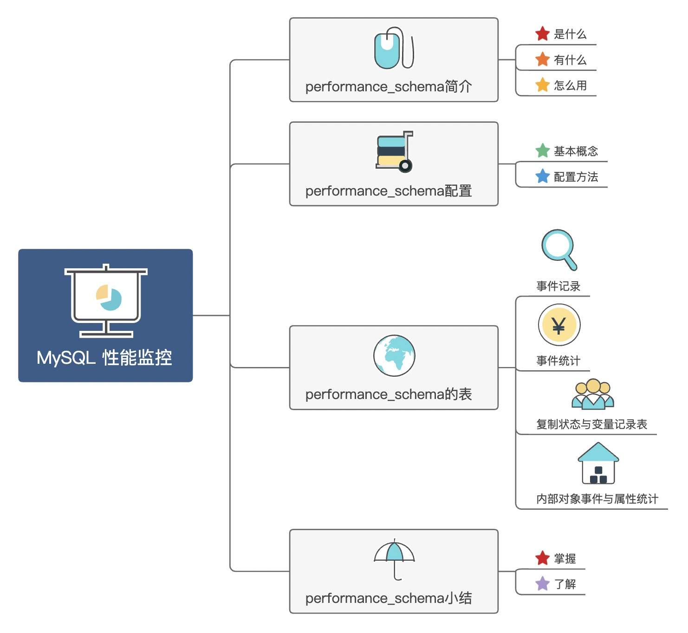
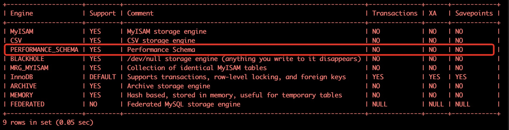
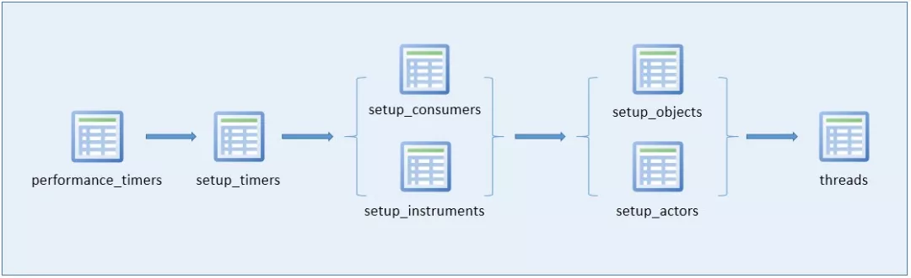
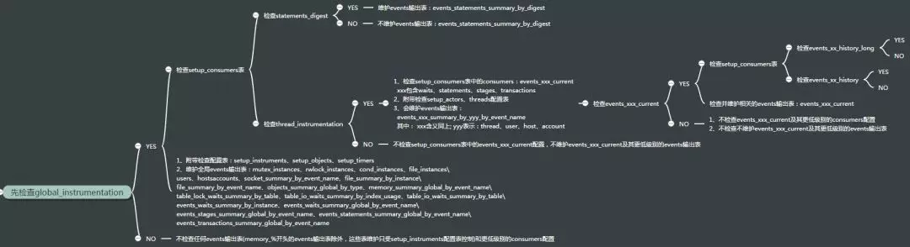
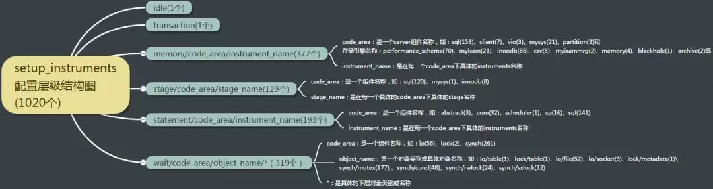

根据 罗小波 专家的分享整理 本系列文章所使用的数据库版本为 MySQL 官方 5.7.17版本

performance_schema
简介
MySQL的performance schema 用于监控MySQL Server在一个较低级别的运行过程中的资源消耗、资源等待等情况，它具有以下特点：
- 提供了一种在数据库运行时实时检查server的内部执行情况的方法。
performance_schema数据库中的表使用performance_schema存储引擎。该数据库主要关注数据库运行过程中的性能相关的数据，与information_schema不同，information_schema主要关注server运行过程中的元数据信息。 performance_schema通过监视server的事件来实现监视server内部运行情况， “事件”就是server内部活动中所做的任何事情以及对应的时间消耗，利用这些信息来判断server中的相关资源消耗在了哪里？一般来说，事件可以是函数调用、操作系统的等待、SQL语句执行的阶段（如sql语句执行过程中的parsing 或 sorting阶段）或者整个SQL语句与SQL语句集合。事件的采集可以方便的提供server中的相关存储引擎对磁盘文件、表I/O、表锁等资源的同步调用信息。performance_schema中的事件与写入二进制日志中的事件（描述数据修改的events）、事件计划调度程序（这是一种存储程序）的事件不同。performance_schema中的事件记录的是server执行某些活动对某些资源的消耗、耗时、这些活动执行的次数等情况。performance_schema中的事件只记录在本地server的performance_schema中，其下的这些表中数据发生变化时不会被写入binlog中，也不会通过复制机制被复制到其他server中。- 当前活跃事件、历史事件和事件摘要相关的表中记录的信息。能提供某个事件的执行次数、使用时长。进而可用于分析某个特定线程、特定对象（如
mutex或file）相关联的活动。 PERFORMANCE_SCHEMA存储引擎使用server源代码中的”检测点”来实现事件数据的收集。对于performance_schema实现机制本身的代码没有相关的单独线程来检测，这与其他功能（如复制或事件计划程序）不同- 收集的事件数据存储在
performance_schema数据库的表中。这些表可以使用SELECT语句查询，也可以使用SQL语句更新performance_schema数据库中的表记录（如动态修改performance_schema的setup_开头的几个配置表，但要注意：配置表的更改会立即生效，这会影响数据收集） performance_schema的表中的数据不会持久化存储在磁盘中，而是保存在内存中，一旦服务器重启，这些数据会丢失（包括配置表在内的整个performance_schema下的所有数据）- MySQL支持的所有平台中事件监控功能都可用，但不同平台中用于统计事件时间开销的计时器类型可能会有所差异。
performance_schema实现机制遵循以下设计目标：
- 启用
performance_schema不会导致server的行为发生变化。例如，它不会改变线程调度机制，不会导致查询执行计划（如EXPLAIN）发生变化 - 启用
performance_schema之后，server会持续不间断地监测，开销很小。不会导致server不可用 - 在该实现机制中没有增加新的关键字或语句，解析器不会变化
- 即使
performance_schema的监测机制在内部对某事件执行监测失败，也不会影响server正常运行 - 如果在开始收集事件数据时碰到有其他线程正在针对这些事件信息进行查询，那么查询会优先执行事件数据的收集，因为事件数据的收集是一个持续不断的过程，而检索(查询)这些事件数据仅仅只是在需要查看的时候才进行检索。也可能某些事件数据永远都不会去检索
- 需要很容易地添加新的
instruments监测点 instruments(事件采集项)代码版本化：如果instruments的代码发生了变更，旧的instruments代码还可以继续工作。- 注意：MySQL
sys schema是一组对象（包括相关的视图、存储过程和函数），可以方便地访问performance_schema收集的数据。同时检索的数据可读性也更高(例如：performance_schema中的时间单位是皮秒，经过sys schema查询时会转换为可读的us,ms,s,min,hour,day等单位)，sys schem在5.7.x版本默认安装
现在，是否觉得上面的介绍内容太过枯燥呢？如果你这么想，那就对了，我当初学习的时候也是这么想的。但现在，对于什么是performance_schema这个问题上，比起更早之前更清晰了呢？如果你还没有打算要放弃阅读本文的话，那么，请跟随我们开始进入到”边走边唱”环节吧！
开启情况
performance_schema被视为存储引擎。如果该引擎可用，则应该在INFORMATION_SCHEMA.ENGINES表或SHOW ENGINES语句的输出中都可以看到它的SUPPORT值为YES，如下：
使用 INFORMATION_SCHEMA.ENGINES表来查询你的数据库实例是否支持INFORMATION_SCHEMA引擎
root@MySQL-01 14:03: [(none)]> select * from information_schema.engines where engine='performance_schema'; |
使用show命令来查询你的数据库实例是否支持INFORMATION_SCHEMA引擎

当我们看到PERFORMANCE_SCHEMA 对应的Support 字段输出为YES时就表示我们当前的数据库版本是支持performance_schema的。
但知道我们的实例支持
performance_schema引擎就可以使用了吗？NO，很遗憾，performance_schema在5.6及其之前的版本中，默认没有启用，从5.7及其之后的版本才修改为默认启用。现在，我们来看看如何设置performance_schema默认启用吧！
启用方式
从上文中我们已经知道，performance_schema在5.7.x及其以上版本中默认启用（5.6.x及其以下版本默认关闭），如果要显式启用或关闭时，我们需要使用参数performance_schema=ON|OFF设置，并在my.cnf中进行配置：
[mysqld] |
mysqld 启动之后，通过如下语句查看performance_schema是否启用生效（值为ON表示performance_schema已初始化成功且可以使用了。如果值为OFF表示在启用performance_schema时发生某些错误。可以查看错误日志进行排查）：
root@MySQL-01 14:04: [(none)]> SHOW VARIABLES LIKE 'performance_schema'; |
现在，你可以在performance_schema下使用show tables语句或者通过查询 INFORMATION_SCHEMA.TABLES表中performance_schema引擎相关的元数据来了解在performance_schema下存在着哪些表：
通过从INFORMATION_SCHEMA.tables表查询有哪些performance_schema引擎的表：
SELECT TABLE_SCHEMA,TABLE_NAME FROM INFORMATION_SCHEMA.TABLES |
直接在performance_schema库下使用show tables语句来查看有哪些performance_schema引擎表：
use performance_schema;show tables; |
现在，我们知道了在 MySQL 5.7.17 版本中，performance_schema 下一共有87张表，那么，这87帐表都是存放什么数据的呢？
表的分类
performance_schema库下的表可以按照监视不同的纬度进行了分组，例如：或按照不同数据库对象进行分组，或按照不同的事件类型进行分组，或在按照事件类型分组之后，再进一步按照帐号、主机、程序、线程、用户等，如下：
按照事件类型分组记录性能事件数据的表
语句事件记录表
等待事件记录表
阶段事件记录表
事务事件记录表
监视文件系统层调用的表
监视内存使用的表
动态对performance_schema进行配置的配置表
语句事件记录表这些表记录了语句事件信息，当前语句事件表
events_statements_current、历史语句事件表events_statements_history和长语句历史事件表events_statements_history_long、以及聚合后的摘要表summary，其中，summary表还可以根据帐号(account)，主机(host)，程序(program)，线程(thread)，用户(user)和全局(global)再进行细分)
show tables like 'events_statement%'; |
等待事件记录表与语句事件类型的相关记录表类似：
show tables like 'events_wait%'; |
阶段事件记录表记录语句执行的阶段事件的表，与语句事件类型的相关记录表类似：
show tables like 'events_stage%'; |
事务事件记录表记录事务相关的事件的表，与语句事件类型的相关记录表类似：
show tables like 'events_transaction%'; |
监视文件系统层调用的表记录监控文件系统层调用情况的表
show tables like '%file%'; |
监视内存使用的表记录内存使用情况的表
qogir_env@localhost : performance_schema 03:58:38> show tables like '%memory%'; |
动态对performance_schema进行配置的配置表用于记录动态对performance_schema进行配置信息的的配置表
动态对performance_schema进行配置的配置表：
root@localhost : performance_schema 12:18:46> show tables like '%setup%'; |
现在，我们已经大概知道了performance_schema中的主要表的分类，但，如何使用他们来为我们提供需要的性能事件数据呢？下面，我们介绍如何通过performance_schema下的配置表来配置与使用performance_schema。
入门使用
数据库刚刚初始化并启动时，并非所有instruments(事件采集项，在采集项的配置表中每一项都有一个开关字段，或为YES，或为NO)和consumers(与采集项类似，也有一个对应的事件类型保存表配置项，为YES就表示对应的表保存性能数据，为NO就表示对应的表不保存性能数据)都启用了，所以默认不会收集所有的事件，可能你需要检测的事件并没有打开，需要进行设置，可以使用如下两个语句打开对应的instruments和consumers（行计数可能会因MySQL版本而异），例如，我们以配置监测等待事件数据为例进行说明：
打开等待事件的采集器配置项开关，需要修改setup_instruments 配置表中对应的采集器配置项：
UPDATE setup_instruments SET ENABLED = 'YES', TIMED = 'YES' where name like 'wait%'; |
打开等待事件的保存表配置开关，修改修改setup_consumers 配置表中对应的配置i向
UPDATE setup_consumers SET ENABLED = 'YES' where name like '%wait%'; |
配置好之后，我们就可以查看server当前正在做什么，可以通过查询events_waits_current表来得知，该表中每个线程只包含一行数据，用于显示每个线程的最新监视事件（正在做的事情）：
SELECT * FROM events_waits_current limit 1\G |
- _current表中每个线程只保留一条记录，且一旦线程完成工作，该表中不会再记录该线程的事件信息
- _history表中记录每个线程已经执行完成的事件信息，但每个线程的只事件信息只记录10条，再多就会被覆盖掉，
- _history_long表中记录所有线程的事件信息，但总记录数量是10000行，超过会被覆盖掉。
现在咱们查看一下历史表events_waits_history 中记录了什么：
SELECT THREAD_ID,EVENT_ID,EVENT_NAME,TIMER_WAIT FROM events_waits_history ORDER BY THREAD_ID limit 21; |
summary表提供所有事件的汇总信息。该组中的表以不同的方式汇总事件数据（如：按用户，按主机，按线程等等）。例如：要查看哪些instruments占用最多的时间，可以通过对events_waits_summary_global_by_event_name表的COUNT_STAR或SUM_TIMER_WAIT列进行查询（这两列是对事件的记录数执行COUNT（）、事件记录的TIMER_WAIT列执行SUM（TIMER_WAIT）统计而来），如下：
SELECT EVENT_NAME,COUNT_STAR FROM events_waits_summary_global_by_event_name |
instance表记录了哪些类型的对象会被检测。这些对象在被server使用时，在该表中将会产生一条事件记录，例如，file_instances表列出了文件I/O操作及其关联文件名：
SELECT FROM file_instances limit 20; |
小结
performance_schema 中的数据实际上主要是从performance_schema、information_schema 中获取，所以要想玩转 sys schema，全面了解 performance_schema 必不可少。
配置详解
基本概念
instruments：生产者，用于采集MySQL 中各种各样的操作产生的事件信息，对应配置表中的配置项我们可以称为监控采集配置项，以下提及生产者均统称为instruments
consumers：消费者，对应的消费者表用于存储来自instruments采集的数据，对应配置表中的配置项我们可以称为消费存储配置项，以下提及消费者均统称为consumers
友情提示：以下内容阅读起来可能比较烧脑，内容也较长，建议大家端好板凳，坐下来，点上一支烟，细细品读，这也是学习performance_schema路上不得不过的火焰山，坚持下去，”翻过这座山，你就可以看到一片海！”
编译时配置
在以往，我们认为自行编译安装MySQL其性能要优于官方编译好的二进制包、rpm包等。可能在MySQL早期的版本中有这样的情况， 但随着MySQL版本不断迭代，业界不少人亲测证实，目前的MySQL版本并不存在自行编译安装性能比官方编译好的二进制包性能高，所以，通常情况下，我们不建议去耗费数十分钟来编译安装MySQL，因为在大规模部署的场景，此举十分浪费时间(需要通过编译安装的方式精简模块的场景除外)
可以使用cmake的编译选项来自行决定你的MySQL实例是否支持performance_schema的某个等待事件类别，如下：
shell> cmake . \ |
注意：虽然我们可以通过cmake的编译选项关闭掉某些performance_schema的功能模块，但是，通常我们不建议这么做，除非你非常清楚后续不可能使用到这些功能模块，否则后续想要使用被编译时关闭的模块，还需要重新编译。
当我们接手一个别人安装的MySQL数据库服务器时，或者你并不清楚自己安装的MySQL版本是否支持performance_schema时，我们可以通过mysqld命令查看是否支持Performance Schema
# 如果发现performance_schema开头的几个选项，则表示当前mysqld支持performance_schema，如果没有发现performance_schema相关的选项，说明当前数据库版本不支持performance_schema，你可能需要升级mysql版本： |
还可以登录到MySQL实例中使用SQL命令查看是否支持performance_schema：
# Support列值为YES表示数据库支持，否则你可能需要升级mysql版本： |
注意：在mysqld选项或show engines语句输出的结果中，如果看到有performance_schema相关的信息，并不代表已经启用了performance_schema，仅仅只是代表数据库支持，如果需要启用它，还需要在服务器启动时使用系统参数performance_schema=on(MySQL 5.7之前的版本默认关闭)显式开启
启动时配置
performance_schema中的配置是保存在内存中的，是易失的，也就是说保存在performance_schema配置表(本章后续内容会讲到)中的配置项在MySQL实例停止时会全部丢失。所以，如果想要把配置项持久化，就需要在MySQL的配置文件中使用启动选项来持久化配置项，让MySQL每次重启都自动加载配置项，而不需要每次重启都再重新配置。
启动选项
performance_schema有哪些启动选项呢？我们可以通过如下命令行命令进行查看:
[root@localhost ~]# mysqld --verbose --help |grep performance-schema |grep -v '\-\-' |sed '1d' |sed '/[0-9]\+/d' |
下面将对这些启动选项进行简单描述(这些启动选项是用于指定consumers和instruments配置项在MySQL启动时是否跟随打开的，之所以叫做启动选项，是因为这些需要在mysqld启动时就需要通过命令行指定或者需要在my.cnf中指定，启动之后通过show variables命令无法查看，因为他们不属于system variables)
- performance_schema_consumer_events_statements_current=TRUE
是否在mysql server启动时就开启events_statements_current表的记录功能(该表记录当前的语句事件信息)，启动之后也可以在setup_consumers表中使用UPDATE语句进行动态更新setup_consumers配置表中的events_statements_current配置项，默认值为TRUE
- performance_schema_consumer_events_statements_history=TRUE
与performance_schema_consumer_events_statements_current选项类似，但该选项是用于配置是否记录语句事件短历史信息，默认为TRUE
- performance_schema_consumer_events_stages_history_long=FALSE
与performance_schema_consumer_events_statements_current选项类似，但该选项是用于配置是否记录语句事件长历史信息，默认为FALSE
- 除了statement(语句)事件之外，还支持：wait(等待)事件、state(阶段)事件、transaction(事务)事件，他们与statement事件一样都有三个启动项分别进行配置，但这些等待事件默认未启用，如果需要在MySQL Server启动时一同启动，则通常需要写进my.cnf配置文件中
- performance_schema_consumer_global_instrumentation=TRUE
是否在MySQL Server启动时就开启全局表（如：mutex_instances、rwlock_instances、cond_instances、file_instances、users、hostsaccounts、socket_summary_by_event_name、file_summary_by_instance等大部分的全局对象计数统计和事件汇总统计信息表 ）的记录功能，启动之后也可以在setup_consumers表中使用UPDATE语句进行动态更新全局配置项
默认值为TRUE
- performance_schema_consumer_statements_digest=TRUE
是否在MySQL Server启动时就开启events_statements_summary_by_digest 表的记录功能，启动之后也可以在setup_consumers表中使用UPDATE语句进行动态更新digest配置项
默认值为TRUE
- performance_schema_consumer_thread_instrumentation=TRUE
是否在MySQL Server启动时就开启
events_xxx_summary_by_yyy_by_event_name表的记录功能，启动之后也可以在setup_consumers表中使用UPDATE语句进行动态更新线程配置项
默认值为TRUE
- performance_schema_instrument[=name]
是否在MySQL Server启动时就启用某些采集器，由于instruments配置项多达数千个，所以该配置项支持key-value模式，还支持%号进行通配等，如下:
# [=name]可以指定为具体的Instruments名称（但是这样如果有多个需要指定的时候，就需要使用该选项多次），也可以使用通配符，可以指定instruments相同的前缀+通配符，也可以使用%代表所有的instruments |
注意，这些启动选项要生效的前提是，需要设置performance_schema=ON。另外，这些启动选项虽然无法使用show variables语句查看，但我们可以通过setup_instruments和setup_consumers表查询这些选项指定的值。
系统变量
与performance_schema相关的system variables可以使用如下语句查看，这些variables用于限定consumers表的存储限制，它们都是只读变量，需要在MySQL启动之前就设置好这些变量的值。
root@localhost : (none) 11:43:29> show variables like '%performance_schema%'; |
下面，我们将对这些system variables(以下称为变量)中几个需要关注的进行简单解释(其中大部分变量是-1值，代表会自动调整，无需太多关注，另外，大于-1值的变量在大多数时候也够用，如果无特殊需求，不建议调整，调整这些参数会增加内存使用量)
performance_schema=ON
- 控制performance_schema功能的开关，要使用MySQL的performance_schema，需要在mysqld启动时启用，以启用事件收集功能
- 该参数在5.7.x之前支持performance_schema的版本中默认关闭，5.7.x版本开始默认开启
- 注意：如果mysqld在初始化performance_schema时发现无法分配任何相关的内部缓冲区，则performance_schema将自动禁用，并将performance_schema设置为OFF
performance_schema_digests_size=10000
- 控制events_statements_summary_by_digest表中的最大行数。如果产生的语句摘要信息超过此最大值，便无法继续存入该表，此时performance_schema会增加状态变量
performance_schema_events_statements_history_long_size=10000
- 控制events_statements_history_long表中的最大行数，该参数控制所有会话在events_statements_history_long表中能够存放的总事件记录数，超过这个限制之后，最早的记录将被覆盖
- 全局变量，只读变量，整型值，5.6.3版本引入
- 5.6.x版本中，5.6.5及其之前的版本默认为10000，5.6.6及其之后的版本默认值为-1，通常情况下，自动计算的值都是10000
- 5.7.x版本中，默认值为-1，通常情况下，自动计算的值都是10000
performance_schema_events_statements_history_size=10
- 控制events_statements_history表中单个线程（会话）的最大行数，该参数控制单个会话在events_statements_history表中能够存放的事件记录数，超过这个限制之后，单个会话最早的记录将被覆盖
- 全局变量，只读变量，整型值，5.6.3版本引入
- 5.6.x版本中，5.6.5及其之前的版本默认为10，5.6.6及其之后的版本默认值为-1，通常情况下，自动计算的值都是10
- 5.7.x版本中，默认值为-1，通常情况下，自动计算的值都是10
除了statement(语句)事件之外，wait(等待)事件、state(阶段)事件、transaction(事务)事件，他们与statement事件一样都有三个参数分别进行存储限制配置，有兴趣的同学自行研究，这里不再赘述
performance_schema_max_digest_length=1024
- 用于控制标准化形式的SQL语句文本在存入performance_schema时的限制长度，该变量与max_digest_length变量相关(max_digest_length变量含义请自行查阅相关资料)
- 全局变量，只读变量，默认值1024字节，整型值，取值范围0~1048576，5.6.26和5.7.8版本中引入
performance_schema_max_sql_text_length=1024
- 控制存入events_statements_current，events_statements_history和events_statements_history_long语句事件表中的SQL_TEXT列的最大SQL长度字节数。 超出系统变量performance_schema_max_sql_text_length的部分将被丢弃，不会记录，一般情况下不需要调整该参数，除非被截断的部分与其他SQL比起来有很大差异
- 全局变量，只读变量，整型值，默认值为1024字节，取值范围为0~1048576，5.7.6版本引入
- 降低系统变量performance_schema_max_sql_text_length值可以减少内存使用，但如果汇总的SQL中，被截断部分有较大差异，会导致没有办法再对这些有较大差异的SQL进行区分。 增加该系统变量值会增加内存使用，但对于汇总SQL来讲可以更精准地区分不同的部分。
运行时配置
在MySQL启动之后，我们就无法使用启动选项来开关相应的consumers和instruments了，此时，我们如何根据自己的需求来灵活地开关performance_schema中的采集信息呢？(例如：默认配置下很多配置项并未开启，我们可能需要即时去修改配置，再如：高并发场景，大量的线程连接到MySQL，执行各种各样的SQL时产生大量的事件信息，而我们只想看某一个会话产生的事件信息时，也可能需要即时去修改配置)，我们可以通过修改performance_schema下的几张配置表中的配置项实现
这些配置表中的配置项之间存在着关联关系，按照配置影响的先后顺序，可整理为如下图(该表仅代表个人理解)：

performance_timers
performance_timers表中记录了server中有哪些可用的事件计时器（注意：该表中的配置项不支持增删改，是只读的。有哪些计时器就表示当前的版本支持哪些计时器），setup_timers配置表中的配置项引用此表中的计时器
每个计时器的精度和数量相关的特征值会有所不同，可以通过如下查询语句查看performance_timers表中记录的计时器和相关的特征信息：
mysql> SELECT * FROM performance_timers; |
performance_timers表中的字段含义如下：
- TIMER_NAME：表示可用计时器名称，CYCLE是指基于CPU（处理器）周期计数器的定时器。在setup_timers表中可以使用performance_timers表中列值不为null的计时器（如果performance_timers表中有某字段值为NULL，则表示该定时器可能不支持当前server所在平台）
- TIMER_FREQUENCY：表示每秒钟对应的计时器单位的数量（即，相对于每秒时间换算为对应的计时器单位之后的数值，例如：每秒=1000毫秒=1000000微秒=1000000000纳秒）。对于CYCLE计时器的换算值，通常与CPU的频率相关。对于performance_timers表中查看到的CYCLE计时器的TIMER_FREQUENCY列值 ，是根据2.4GHz处理器的系统上获得的预设值（在2.4GHz处理器的系统上，CYCLE可能接近2400000000）。NANOSECOND 、MICROSECOND 、MILLISECOND 计时器是基于固定的1秒换算而来。对于TICK计时器，TIMER_FREQUENCY列值可能会因平台而异（例如，某些平台使用100个tick/秒，某些平台使用1000个tick/秒）
- TIMER_RESOLUTION：计时器精度值，表示在每个计时器被调用时额外增加的值（即使用该计时器时，计时器被调用一次，需要额外增加的值）。如果计时器的分辨率为10，则其计时器的时间值在计时器每次被调用时，相当于TIMER_FREQUENCY值+10
- TIMER_OVERHEAD：表示在使用定时器获取事件时开销的最小周期值（performance_schema在初始化期间调用计时器20次，选择一个最小值作为此字段值），每个事件的时间开销值是计时器显示值的两倍，因为在事件的开始和结束时都调用计时器。注意：计时器代码仅用于支持计时事件，对于非计时类事件（如调用次数的统计事件），这种计时器统计开销方法不适用
- PS：对于performance_timers表，不允许使用TRUNCATE TABLE语句
setup_timers
setup_timers表中记录当前使用的事件计时器信息（注意：该表不支持增加和删除记录，只支持修改和查询）
可以通过UPDATE语句来更改setup_timers.TIMER_NAME列值，以给不同的事件类别选择不同的计时器，setup_timers.TIMER_NAME列有效值来自performance_timers.TIMER_NAME列值。
对setup_timers表的修改会立即影响监控。正在执行的事件可能会使用修改之前的计时器作为开始时间，但可能会使用修改之后的新的计时器作为结束时间，为了避免计时器更改后可能产生时间信息收集到不可预测的结果，请在修改之后使用TRUNCATE TABLE语句来重置performance_schema中相关表中的统计信息。
mysql> SELECT * FROM setup_timers; |
setup_timers表字段含义如下：
- NAME：计时器类型，对应着某个事件类别(事件类别详见 3.3.4 节)
- TIMER_NAME：计时器类型名称。此列可以修改，有效值参见performance_timers.TIMER_NAME列值
- PS：对于setup_timers表，不允许使用TRUNCATE TABLE语句
setup_consumers
setup_consumers表列出了consumers可配置列表项(注意：该表不支持增加和删除记录，只支持修改和查询)，如下：
mysql> SELECT * FROM setup_consumers; |
对setup_consumers表的修改会立即影响监控，setup_consumers字段含义如下：
- NAME：consumers配置名称
- ENABLED：consumers是否启用，有效值为YES或NO，此列可以使用UPDATE语句修改。如果需要禁用consumers就设置为NO，设置为NO时，server不会维护这些consumers表的内容新增和删除，且也会关闭consumers对应的instruments（如果没有instruments发现采集数据没有任何consumers消费的话）
- PS：对于setup_consumers表，不允许使用TRUNCATE TABLE语句
setup_consumers表中的consumers配置项具有层级关系，具有从较高级别到较低级别的层次结构，按照优先级顺序，可列举为如下层次结构（你可以根据这个层次结构，关闭你可能不需要的较低级别的consumers，这样有助于节省性能开销，且后续查看采集的事件信息时也方便进行筛选）：

从上图中的信息中可以看到，setup_consumers表中consumers配置层次结构中：
global_instrumentation处于顶级位置，优先级最高。
- 当global_instrumentation为YES时，会检查setup_consumers表中的statements_digest和thread_instrumentation的配置，会附带检查setup_instruments、setup_objects、setup_timers配置表
- 当global_instrumentation为YES时（无论setup_consumers表中的statements_digest和thread_instrumentation如何配置，只依赖于global_instrumentation的配置），会维护全局events输出表：mutex_instances、rwlock_instances、cond_instances、file_instances、users、hostsaccounts、socket_summary_by_event_name、file_summary_by_instance、file_summary_by_event_name、objects_summary_global_by_type、memory_summary_global_by_event_name、table_lock_waits_summary_by_table、table_io_waits_summary_by_index_usage、table_io_waits_summary_by_table、events_waits_summary_by_instance、events_waits_summary_global_by_event_name、events_stages_summary_global_by_event_name、events_statements_summary_global_by_event_name、events_transactions_summary_global_by_event_name
- 当globalinstrumentation为NO时，不会检查任何更低级别的consumers配置，不会维护任何events输出表(memory%开头的events输出表除外，这些表维护只受setup_instruments配置表控制)
statements_digest和thread_instrumentation处于同一级别，优先级次于global_instrumentation，且依赖于global_instrumentation为YES时配置才会被检测
- 当statements_digest为YES时，statements_digest consumers没有更低级别的配置，依赖于global_instrumentation为YES时配置才会被检测，会维护events输出表：events_statements_summary_by_digest
- 当statements_digest为NO时，不维护events输出表：events_statements_summary_by_digest
- 当thread_instrumentation为YES时，会检查setup_consumers表中的events_xxx_current配置（xxx表示：waits、stages、statements、transactions），会附带检查setup_actors、threads配置表。会维护events输出表 events_xxx_summary_by_yyy_by_event_name，其中： xxx含义同上; yyy表示：thread、user、host、account
- 当thread_instrumentation为NO时，不检查setup_consumers表中的events_xxx_current配置，不维护events_xxx_current及其更低级别的events输出表
events_xxx_current系列(xxx含义同上)consumers处于同一级别。且依赖于thread_instrumentation为YES时配置才会被检测
- 当events_xxx_current为YES时，会检测setup_consumers配置表中的events_xxx_history和events_xxx_history_long系列 consumers配置，会维护events_xxx_current系列表
- 当events_xxx_current为NO时，不检测setup_consumers配置表中的events_xxx_history和events_xxx_history_long系列 consumers配置，不维护events_xxx_current系列表
events_xxx_history和events_xxx_history_long系列（同events_xxx_current中的xxx）consumers处于同一级别，优先级次于events_xxx_current 系列consumers(xxx含义同上)，依赖于events_xxx_current 系列consumers为YES时才会被检测
- 当events_xxx_history为YES时，没有更低级别的conosumers配置需要检测，但会附带检测setup_actors、threads配置表中的HISTORY列值，会维护events_xxx_history系列表，反之不维护
- 当events_xxx_history_long为YES时，没有更低级别的conosumers配置需要检测，但会附带检测setup_actors、threads配置表中的HISTORY列值，会维护events_xxx_history_long系列表，反之不维护
注意：
events 输出表
events_xxx_summary_by_yyy_by_event_name的开关由global_instrumentation控制，且表中是有固定数据行，不可清理，truncate或者关闭相关的consumers时只是不统计相关的instruments收集的events数据，相关字段为0值
如果performance_schema在对setup_consumers表做检查时发现某个consumers配置行的ENABLED 列值不为YES，则与这个consumers相关联的events输出表中就不会接收存储任何事件记录
高级别的consumers设置不为YES时，依赖于这个consumers配置为YES时才会启用的那些更低级别的consumers将一同被禁用
配置项修改示例：
# 打开events_waits_current表当前等待事件记录功能 |
setup_instruments
setup_instruments 表列出了instruments 列表配置项，即代表了哪些事件支持被收集：
mysql> SELECT * FROM setup_instruments; |
instruments具有树形结构的命名空间，从setup_instruments表中的NAME字段上可以看到，instruments名称的组成从左到右，最左边的是顶层instruments类型命名，最右边是一个具体的instruments名称，有一些顶层instruments没有其他层级的组件（如：transaction和idle，那么这个顶层类型既是类型又是具体的instruments），有一些顶层instruments具有下层instruments（如：wait/io/file/myisam/log），一个层级的instruments名称对应的组件数量取决于instruments的类型。
一个给定instruments名称的含义，需要看instruments名称的左侧命名而定，例如下边两个myisam相关名称的instruments含义各不相同： 名称中给定组件的解释取决于其左侧的组件。例如，myisam显示在以下两个名称：
# 第一种instruments表示myisam引擎的文件IO相关的instruments |
instruments的命名格式组成：performance_schema实现的一个前缀结构（如：wait/io/file/myisam/log中的wait+由开发人员实现的instruments代码定义的一个后缀名称组成（如：wait/io/file/myisam/log中的io/file/myisam/log）
- instruments名称前缀表示instruments的类型(如wait/io/file/myisam/log中的wait)，该前缀名称还用于在setup_timers表中配置某个事件类型的定时器，也被称作顶层组件
- instruments名称后缀部分来自instruments本身的代码。后缀可能包括以下层级的组件：
- 主要组件的名称（如：myisam，innodb，mysys或sql，这些都是server的子系统模块组件）或插件名称
- 代码中变量的名称，格式为XXX（全局变量）或CCC::MMM（CCC表示一个类名，MMM表示在类CCC作用域中的一个成员对象），如：’wait/synch/cond/sql/COND_thread_cache’ instruments中的COND_thread_cache，’wait/synch/mutex/mysys/THR_LOCK_myisam’ instruments中的THR_LOCK_myisam，’wait/synch/mutex/sql/MYSQL_BIN_LOG::LOCK_index’ instruments中的MYSQL_BIN_LOG::LOCK_index
在源代码中每一个实现的instruments，如果该源代码被加载到server中，那么在该表中就会有一行对应的配置，当启用或执行instruments时，会创建对应的instruments实例，这些实例在* _instances表中可以查看到
大多数setup_instruments配置行修改会立即影响监控，但对于某些instruments，运行时修改不生效（配置表可以修改，但不生效），只有在启动之前修改才会生效（使用system variables写到配置文件中），不生效的instruments主要有mutexes, conditions, and rwlocks
setup_instruments表字段详解如下：
- NAME：instruments名称，instruments名称可能具有多个部分并形成层次结构(详见下文)。当instruments被执行时，产生的事件名称就取自instruments的名称，事件没有真正的名称，直接使用instruments来作为事件的名称，可以将instruments与产生的事件进行关联
- ENABLED：instrumetns是否启用，有效值为YES或NO，此列可以使用UPDATE语句修改。如果设置为NO，则这个instruments不会被执行，不会产生任何的事件信息
- TIMED：instruments是否收集时间信息，有效值为YES或NO，此列可以使用UPDATE语句修改，如果设置为NO，则这个instruments不会收集时间信息
对于内存instruments，setup_instruments中的TIMED列将被忽略（使用update语句对这些内存instruments设置timed列为YES时可以执行成功，但是你会发现执行update之后select这些instruments的timed列还是NO），因为内存操作没有定时器信息
如果某个instruments的enabled设置为YES（表示启用这个instruments），但是timed列未设置为YES（表示计时器功能禁用），则instruments会产生事件信息，但是事件信息对应的TIMER_START，TIMER_END和TIMER_WAIT定时器值都为NULL。后续汇总表中计算sum，minimum，maximum和average时间值时会忽略这些null值
PS：setup_instruments表不允许使用TRUNCATE TABLE语句
setup_instruments中的instruments name层级结构图如下：

在setup_instruments表中的instruments顶级instruments 组件分类如下：
Idle Instrument 组件：用于检测空闲事件的instruments，该instruments没有其他层级的组件，空闲事件收集时机如下：
- 依据socket_instances表中的STATE字段而定，STATE字段有ACTIVE和IDLE两个值，如果STATE字段值为ACTIVE，则performance_schema使用与socket类型相对应的instruments跟踪活跃的socket连接的等待时间（监听活跃的socket的instruments有wait/io/socket/sql/server_tcpip_socket、wait/io/socket/sql/server_unix_socket、wait/io/socket/sql/client_connection），如果STATE字段值为IDLE，则performance_schema使用idle instruments跟踪空闲socket连接的等待时间
- 如果socket连接在等待来自客户端的请求，则此时套接字处于空闲状态，socket_instances表中处于空闲的套接字行的STATE字段会从ACTIVE变为IDLE。 EVENT_NAME列值保持不变，instruments的定时器被暂停。 并在events_waits_current表中生成一个EVENT_NAME值为idle的事件记录行
- 当套接字接收到客户端的下一个请求时，空闲事件被终止，套接字实例从空闲状态切换到活动状态，并恢复套接字instruments的定时器工作
- socket_instances表不允许使用TRUNCATE TABLE语句
- 表字段含义详见后续socket_instances表介绍章节
transaction instrument 组件：用于检测transactions 事件的instruments，该instruments没有其他层级的组件
Memory Instrument 组件：用于检测memorys 事件的instruments
- 默认情况下禁用了大多数memory instruments，但可以在server启动时在my.cnf中启用或禁用，或者在运行时更新setup_instruments表中相关instruments配置来动态启用或禁用。memory instruments的命名格式为：memory/code_area/instrument_name，其中code_area是一个server组件字符串值（如：sql、client、vio、mysys、partition和存储引擎名称：performance_schema、myisam、innodb、csv、myisammrg、memory、blackhole、archive等），而instrument_name是具体的instruments名称
- 以前缀’memory/performance_schema’命名的instruments显示为performance_schem内部缓冲区分配了多少内存。’memory/performance_schema’ 开头的instruments’是内置的，无法在启动时或者运行时人为开关，内部始终启用。这些instruments采集的events事件记录仅存储在memory_summary_global_by_event_name表中。详细信息详见后续章节
Stage Instrument 组件：用于检测stages事件的instruments
- stage instruments命名格式为：’stage/code_area/stage_name’ 格式，其中code_area是一个server组件字符串值（与memory instruments类似），stage_name表示语句的执行阶段，如’Sorting result’ 和 ‘Sending data’。这些执行阶段字符串值与SHOW PROCESSLIST的State列值、INFORMATION_SCHEMA.PROCESSLIST表的STATE列值类似。
Statement Instrument 组件：用于检测statements事件的instruments，包含如下几个子类
- statement/abstract/_：_statement操作的抽象 instruments。抽象 instruments用于语句没有确定语句类型的早期阶段，在语句类型确定之后使用对应语句类型的instruments代替，详细信息见后续章节 * statement/com/：command操作相关的instruments。这些名称对应于COM_xxx操作命令（详见mysql_com.h头文件和sql/sql_parse.cc文件。例如：statement/com/Connect和statement/com/Init DB instruments分别对应于COM_CONNECT和COM_INIT_DB命令）
- statement/scheduler/event：用于跟踪一个事件调度器执行过程中的所有事件的instruments，该类型instruments只有一个
- statement/sp/*：*用于检测存储程序执行过程中的内部命令的instruemnts，例如，statement/sp/cfetch和statement/sp/freturn instruments表示检测存储程序内部使用游标提取数据、函数返回数据等相关命令 * statement/sql/：SQL语句操作相关的instruments。例如，statements/sql/create_db和statement/sql/select instruments，表示检测CREATE DATABASE和SELECT语句的instruments
Wait Instrument 组件：用于检测waits事件的instruments，包含如下几个子类
- wait/io：用于检测I/O操作的instruments，包含如下几个子类
- 1）、wait/io/file：用于检测文件I/O操作的instruments，对于文件来说，表示等待文件相关的系统调用完成，如fwrite（）系统调用。由于缓存的存在，在数据库中的相关操作时不一定需要在磁盘上做读写操作。
- 2）、wait/io/socket：用于检测socket操作的instruments，socket instruments的命名形式为：’wait/io/socket/sql/socket_type’，server在支持的每一种网络通讯协议上监听socket。socket instruments监听TCP/IP、Unix套接字文件连接的socket_type有server_tcpip_socket、server_unix_socket值。当监听套接字检测到有客户端连接进来时，server将客户端连接转移到被单独线程管理的新套接字来处理。新连接线程对应的socket_type值为client_connection。使用语句select * from setup_instruments where name like ‘wait/io/socket%’;可以查询这三个socket_type对应的instruments
wait/io/table/sql/handler：
1). 表I/O操作相关的instruments。这个类别包括了对持久基表或临时表的行级访问（对数据行获取，插入，更新和删除），对于视图来说，instruments检测时会参照被视图引用的基表访问情况
2). 与大多数等待事件不同，表I/O等待可以包括其他等待。例如，表I/O可能包括文件I/O或内存操作。因此，表I/O等待的事件在events_waits_current表中的记录通常有两行（除了wait/io/table/sql/handler的事件记录之外，可能还包含一行wait/io/file/myisam/dfile的事件记录）。这种可以叫做表IO操作的原子事件
3). 某些行操作可能会导致多个表I/O等待。例如，如果有INSERT的触发器，那么插入操作可能导致触发器更新操作。
wait/lock：锁操作相关的instruments
1). wait/lock/table：表锁操作相关的instruments
2). wait/lock/metadata/sql/mdl：MDL锁操作相关的instruments
wait/synch：磁盘同步object相关的instruments， performance_schema.events_waits_xxx表中的TIMER_WAIT时间列包括了在尝试获取某个object上的锁（如果这个对象上已经存在锁）的时候被阻塞的时长。
1). wait/synch/cond：一个线程使用一个状态来向其他线程发信号通知他们正在等待的事情已经发生了。如果一个线程正在等待这个状态，那么它可以被这个状态唤醒并继续往下执行。如果是几个线程正在等待这个状态，则这些线程都会被唤醒，并竞争他们正在等待的资源，该instruments用于采集某线程等待这个资源时被阻塞的事件信息。
2). wait/synch/mutex：一个线程在访问某个资源时，使用互斥对象防止其他线程同时访问这个资源。该instruments用于采集发生互斥时的事件信息
3). wait/synch/rwlock：一个线程使用一个读写锁对象对某个特定变量进行锁定，以防止其他线程同时访问，对于使用共享读锁锁定的资源，多个线程可以同时访问，对于使用独占写锁锁定的资源，只有一个线程能同时访问，该instruments用于采集发生读写锁锁定时的事件信息
4). wait/synch/sxlock：shared-exclusive(SX)锁是一种rwlock锁 object，它提供对公共资源的写访问的同时允许其他线程的不一致读取。sxlocks锁object可用于优化数据库读写场景下的并发性和可扩展性。
要控制这些instruments的起停，将ENABLED列设置为YES或NO，要配置instruments是否收集计时器信息，将TIMED列值设置为YES或NO
setup_instruments表，对大多数instruments的修改会立即影响监控。但对于某些instruments，修改需要在mysql server重启才生效，运行时修改不生效。因为这些可能会影响mutexes、conditions和rwlocks，下面我们来看一些setup_instruments表修改示例：
# 禁用所有instruments，修改之后，生效的instruments修改会立即产生影响，即立即关闭收集功能： |
查找innodb存储引擎的文件相关的instruments，可以用如下语句查询:
admin@localhost : performance_schema 09:16:59> select * from setup_instruments where name like 'wait/io/file/innodb/%'; |
PS：
- 官方文档中没有找到每一个instruments具体的说明文档，官方文档中列出如下几个原因：
- instruments是服务端代码，所以代码可能经常变动
- instruments总数量有数百种，全部列出不现实
- instruments会因为你安装的版本不同而有所不同，每一个版本所支持的instruments可以通过查询setup_instruments表获取
一些可能常用的场景相关的设置 :
metadata locks监控需要打开’wait/lock/metadata/sql/mdl’ instruments才能监控，开启这个instruments之后在表performance_schema.metadata_locks表中可以查询到MDL锁信息
profiing探针功能即将废弃，监控探针相关的事件信息需要打开语句：select * from setup_instruments where name like ‘%stage/sql%’ and name not like ‘%stage/sql/Waiting%’ and name not like ‘%stage/sql/%relay%’ and name not like ‘%stage/sql/%binlog%’ and name not like ‘%stage/sql/%load%’ ;返回结果集中的instruments，开启这些instruments之后，可以在performance_schema.events_stages_xxx表中查看原探针相关的事件信息。
表锁监控需要打开’wait/io/table/sql/handler’ instruments，开启这个instruments之后在表 performance_schema.table_handles中会记录了当前打开了哪些表(执行flush tables强制关闭打开的表时，该表中的信息会被清空)，哪些表已经被加了表锁（某会话持有表锁时，相关记录行中的OWNER_THREAD_ID和OWNER_EVENT_ID列值会记录相关的thread id和event id），表锁被哪个会话持有（释放表锁时，相关记录行中的OWNER_THREAD_ID和OWNER_EVENT_ID列值会被清零）
查询语句top number监控，需要打开’statement/sql/select’ instruments，然后打开events_statements_xxx表，通过查询performance_schema.events_statements_xxx表的SQL_TEXT字段可以看到原始的SQL语句，查询TIMER_WAIT字段可以知道总的响应时间，LOCK_TIME字段可以知道加锁时间（注意时间单位是皮秒，需要除以1000000000000才是单位秒）
有关setup_instruments字段详解
setup_actors
setup_actors用于配置是否为新的前台server线程（与客户端连接相关联的线程）启用监视和历史事件日志记录。默认情况下，此表的最大行数为100。可以使用系统变量performance_schema_setup_actors_size在server启动之前更改此表的最大配置行数
- 对于每个新的前台server线程，perfromance_schema会匹配该表中的User,Host列进行匹配，如果匹配到某个配置行，则继续匹配该行的ENABLED和HISTORY列值，ENABLED和HISTORY列值也会用于生成threads配置表中的行INSTRUMENTED和HISTORY列。如果用户线程在创建时在该表中没有匹配到User,Host列，则该线程的INSTRUMENTED和HISTORY列将设置为NO，表示不对这个线程进行监控，不记录该线程的历史事件信息。
- 对于后台线程（如IO线程，日志线程，主线程，purged线程等），没有关联的用户， INSTRUMENTED和HISTORY列值默认为YES，并且后台线程在创建时，不会查看setup_actors表的配置，因为该表只能控制前台线程，后台线程也不具备用户、主机属性
setup_actors表的初始内容是匹配任何用户和主机，因此对于所有前台线程，默认情况下启用监视和历史事件收集功能，如下：
mysql> SELECT * FROM setup_actors; |
setup_actors表字段含义如下：
- HOST：与grant语句类似的主机名，一个具体的字符串名字，或使用”％”表示”任何主机”
- USER：一个具体的字符串名称，或使用”％”表示”任何用户”
- ROLE：当前未使用，MySQL 8.0中才启用角色功能
- ENABLED：是否启用与HOST，USER，ROLE匹配的前台线程的监控功能，有效值为：YES或NO
- HISTORY：是否启用与HOST， USER，ROLE匹配的前台线程的历史事件记录功能，有效值为：YES或NO
- PS：setup_actors表允许使用TRUNCATE TABLE语句清空表，或者DELETE语句删除指定行
对setup_actors表的修改仅影响修改之后新创建的前台线程，对于修改之前已经创建的前台线程没有影响，如果要修改已经创建的前台线程的监控和历史事件记录功能，可以修改threads表行的INSTRUMENTED和HISTORY列值：
当一个前台线程初始化连接mysql server时，performance_schema会对表setup_actors执行查询，在表中查找每个配置行，首先尝试使用USER和HOST列（ROLE未使用）依次找出匹配的配置行，然后再找出最佳匹配行并读取匹配行的ENABLED和HISTORY列值，用于填充threads表中的ENABLED和HISTORY列值。
示例，假如setup_actors表中有如下HOST和USER值：
- USER =’literal’ and HOST =’literal’
- USER =’literal’ and HOST =’％’
- USER =’％’ and HOST =’literal’
- USER =’％’ and HOST =’％’
匹配顺序很重要，因为不同的匹配行可能具有不同的USER和HOST值（mysql中对于用户帐号是使用user@host进行区分的），根据匹配行的ENABLED和HISTORY列值来决定对每个HOST，USER或ACCOUNT（USER和HOST组合，如：user@host）对应的线程在threads表中生成对应的匹配行的ENABLED和HISTORY列值 ，以便决定是否启用相应的instruments和历史事件记录，类似如下：
- 当在setup_actors表中的最佳匹配行的ENABLED = YES时，threads表中对应线程的配置行中INSTRUMENTED列值将变为YES，HISTORY 列同理
- 当在setup_actors表中的最佳匹配行的ENABLED = NO时，threads表中对应线程的配置行中INSTRUMENTED列值将变为NO，HISTORY 列同理
- 当在setup_actors表中找不到匹配时，threads表中对应线程的配置行中INSTRUMENTED和HISTORY值值将变为NO
- setup_actors表配置行中的ENABLED和HISTORY列值可以相互独立设置为YES或NO，互不影响，一个是是否启用线程对应的instruments，一个是是否启用线程相关的历史事件记录的consumers
默认情况下，所有新的前台线程启用instruments和历史事件收集，因为setup_actors表中的预设值是host=’%’，user=’%’,ENABLED=’YES’,HISTORY=’YES’的。如果要执行更精细的匹配(例如仅对某些前台线程进行监视），那就必须要对该表中的默认值进行修改，如下：
# 首先使用UPDATE语句把默认配置行禁用 |
对于后台线程，对setup_actors表的修改不生效，如果要干预后台线程默认的设置，需要查询threads表找到相应的线程，然后使用UPDATE语句直接修改threads表中的INSTRUMENTED和HISTORY列值。
setup_objects
setup_objects表控制performance_schema是否监视特定对象。默认情况下，此表的最大行数为100行。要更改表行数大小，可以在server启动之前修改系统变量performance_schema_setup_objects_size的值。
setup_objects表初始内容如下所示：
mysql> SELECT * FROM setup_objects; |
对setup_objects表的修改会立即影响对象监控
在setup_objects中列出的监控对象类型，在进行匹配时，performance_schema基于OBJECT_SCHEMA和OBJECT_NAME列依次往后匹配，如果没有匹配的对象则不会被监视
默认配置中开启监视的对象不包含mysql，INFORMATION_SCHEMA和performance_schema数据库中的所有表（从上面的信息中可以看到这几个库的enabled和timed字段都为NO，注意：对于INFORMATION_SCHEMA数据库，虽然该表中有一行配置，但是无论该表中如何设置，都不会监控该库，在setup_objects表中information_schema.%的配置行仅作为一个缺省值）
当performance_schema在setup_objects表中进行匹配检测时，会尝试首先找到最具体（最精确）的匹配项。例如，在匹配db1.t1表时，它会从setup_objects表中先查找”db1”和”t1”的匹配项，然后再查找”db1”和”％”，然后再查找”％”和”％”。匹配的顺序很重要，因为不同的匹配行可能具有不同的ENABLED和TIMED列值
如果用户对该表具有INSERT和DELETE权限，则可以对该表中的配置行进行删除和插入新的配置行。对于已经存在的配置行，如果用户对该表具有UPDATE权限，则可以修改ENABLED和TIMED列，有效值为：YES和NO
setup_objects表列含义如下：
- OBJECT_TYPE：instruments类型，有效值为：”EVENT”（事件调度器事件）、”FUNCTION”（存储函数）、”PROCEDURE”（存储过程）、”TABLE”（基表）、”TRIGGER”（触发器），TABLE对象类型的配置会影响表I/O事件（wait/io/table/sql/handler instrument）和表锁事件（wait/lock/table/sql/handler instrument）的收集
- OBJECT_SCHEMA：某个监视类型对象涵盖的数据库名称，一个字符串名称，或”％”(表示”任何数据库”)
- OBJECT_NAME：某个监视类型对象涵盖的表名，一个字符串名称，或”％”(表示”任何数据库内的对象”)
- ENABLED：是否开启对某个类型对象的监视功能，有效值为：YES或NO。此列可以修改
- TIMED：是否开启对某个类型对象的时间收集功能，有效值为：YES或NO，此列可以修改
- PS：对于setup_objects表，允许使用TRUNCATE TABLE语句
setup_objects配置表中默认的配置规则是不启用对mysql、INFORMATION_SCHEMA、performance_schema数据库下的对象进行监视的（ENABLED和TIMED列值全都为NO）
performance_schema在setup_objects表中进行查询匹配时，如果发现某个OBJECT_TYPE列值有多行，则会尝试着匹配更多的配置行，如下（performance_schema按照如下顺序进行检查）：
- OBJECT_SCHEMA =’literal’ and OBJECT_NAME =’literal’
- OBJECT_SCHEMA =’literal’ and OBJECT_NAME =’％’
- OBJECT_SCHEMA =’％’ and OBJECT_NAME =’％’
- 例如，要匹配表对象db1.t1，performance_schema在setup_objects表中先查找”OBJECT_SCHEMA = db1”和”OBJECT_NAME = t1”的匹配项，然后查找”OBJECT_SCHEMA = db1”和”OBJECT_NAME =％”，然后查找”OBJECT_SCHEMA = ％”和”OBJECT_NAME = ％”。匹配顺序很重要，因为不同的匹配行中的ENABLED和TIMED列可以有不同的值，最终会选择一个最精确的匹配项
对于表对象相关事件，instruments是否生效需要看setup_objects与setup_instruments两个表中的配置内容相结合，以确定是否启用instruments以及计时器功能（例如前面说的I/O事件：wait/io/table/sql/handler instrument和表锁事件：wait/lock/table/sql/handler instrument，在setup_instruments配置表中也有明确的配置选项）：
- 只有在Setup_instruments和setup_objects中的ENABLED列都为YES时，表的instruments才会生成事件信息
- 只有在Setup_instruments和setup_objects中的TIMED列都为YES时，表的instruments才会启用计时器功能（收集时间信息）
- 例如：要监视db1.t1、db1.t2、db2.%、db3.%这些表，setup_instruments和setup_objects两个表中有如下配置项
# setup_instruments表 |
对于存储程序对象相关的事件，performance_schema只需要从setup_objects表中读取配置项的ENABLED和TIMED列值。因为存储程序对象在setup_instruments表中没有对应的配置项
如果持久性表和临时表名称相同，则在setup_objects表中进行匹配时，针对这两种类型的表的匹配规则都同时生效（不会发生一个表启用监控，另外一个表不启用）
threads
threads表对于每个server线程生成一行包含线程相关的信息，例如：显示是否启用监视，是否启用历史事件记录功能，如下：
admin@localhost : performance_schema 04:25:55> select * from threads where TYPE='FOREGROUND' limit 2\G; |
当performance_schema初始化时，它根据当时存在的线程每个线程生成一行信息记录在threads表中。此后，每新建一个线程在该表中就会新增一行对应线程的记录
新线程信息的INSTRUMENTED和HISTORY列值由setup_actors表中的配置决定。有关setup_actors表的详细信息参见3.3.5. 节
当某个线程结束时，会从threads表中删除对应行。对于与客户端会话关联的线程，当会话结束时会删除threads表中与客户端会话关联的线程配置信息行。如果客户端自动重新连接，则也相当于断开一次（会删除断开连接的配置行）再重新创建新的连接，两次连接创建的PROCESSLIST_ID值不同。新线程初始INSTRUMENTED和HISTORY值可能与断开之前的线程初始INSTRUMENTED和HISTORY值不同：setup_actors表在此期间可能已更改，并且如果一个线程在创建之后，后续再修改了setup_actors表中的INSTRUMENTED或HISTORY列值，那么后续修改的值不会影响到threads表中已经创建好的线程的INSTRUMENTED或HISTORY列值
PROCESSLIST_*开头的列提供与INFORMATION_SCHEMA.PROCESSLIST表或SHOW PROCESSLIST语句类似的信息。但threads表中与其他两个信息来源有所不同：
- 对threads表的访问不需要互斥体，对server性能影响最小。 而使用INFORMATION_SCHEMA.PROCESSLIST和SHOW PROCESSLIST查询线程信息的方式会损耗一定性能，因为他们需要互斥体
- threads表为每个线程提供附加信息，例如：它是前台还是后台线程，以及与线程相关联的server内部信息
- threads表提供有关后台线程的信息，而INFORMATION_SCHEMA.PROCESSLIST和SHOW PROCESSLIST不能提供
- 可以通过threads表中的INSTRUMENTED字段灵活地动态开关某个线程的监视功能、HISTORY字段灵活地动态开关某个线程的历史事件日志记录功能。要控制新的前台线程的初始INSTRUMENTED和HISTORY列值，通过setup_actors表的HOST、 USER对某个主机、用户进行配置。要控制已创建线程的采集和历史事件记录功能，通过threads表的INSTRUMENTED和HISTORY列进行设置
- 对于INFORMATION_SCHEMA.PROCESSLIST和SHOW PROCESSLIST，需要有PROCESS权限，对于threads表只要有SELECT权限就可以查看所有用户的线程信息
threads表字段含义如下：
THREAD_ID：线程的唯一标识符（ID）
NAME：与server中的线程检测代码相关联的名称(注意，这里不是instruments名称)。例如，thread/sql/one_connection对应于负责处理用户连接的代码中的线程函数名，thread/sql/main表示server的main（）函数名称
TYPE：线程类型，有效值为：FOREGROUND、BACKGROUND。分别表示前台线程和后台线程，如果是用户创建的连接或者是复制线程创建的连接，则标记为前台线程（如：复制IO和SQL线程，worker线程，dump线程等），如果是server内部创建的线程（不能用户干预的线程），则标记为后台线程，如：innodb的后台IO线程等
PROCESSLIST_ID：对应INFORMATION_SCHEMA.PROCESSLIST表中的ID列。该列值与show processlist语句、INFORMATION_SCHEMA.PROCESSLIST表、connection_id()函数返回的线程ID值相等。另外，threads表中记录了内部线程，而processlist表中没有记录内部线程，所以，对于内部线程，在threads表中的该字段显示为NULL，因此在threads表中NULL值不唯一（可能有多个后台线程）
PROCESSLIST_USER：与前台线程相关联的用户名，对于后台线程为NULL。
PROCESSLIST_HOST：与前台线程关联的客户端的主机名，对于后台线程为NULL。与INFORMATION_SCHEMA PROCESSLIST表的HOST列或SHOW PROCESSLIST输出的主机列不同，PROCESSLIST_HOST列不包括TCP/IP连接的端口号。要从performance_schema中获取端口信息，需要查询socket_instances表（关于socket的instruments wait/io/socket/sql/*默认关闭）：
PROCESSLIST_DB：线程的默认数据库，如果没有，则为NULL。
PROCESSLIST_COMMAND：对于前台线程，该值代表着当前客户端正在执行的command类型，如果是sleep则表示当前会话处于空闲状态。有关线程command的详细说明，参见链接：
https://dev.mysql.com/doc/refman/5.7/en/thread-information.html。对于后台线程不会执行这些command，因此此列值可能为NULL
PROCESSLIST_TIME：当前线程已处于当前线程状态的持续时间（秒）
PROCESSLIST_STATE：表示线程正在做什么事情。有关PROCESSLIST_STATE值的说明，详见链接：
PROCESSLIST_INFO：线程正在执行的语句，如果没有执行任何语句，则为NULL。该语句可能是发送到server的语句，也可能是某个其他语句执行时内部调用的语句。例如：如果CALL语句执行存储程序，则在存储程序中正在执行SELECT语句，那么PROCESSLIST_INFO值将显示SELECT语句
PARENT_THREAD_ID：如果这个线程是一个子线程（由另一个线程生成），那么该字段显示其父线程ID
ROLE：暂未使用
INSTRUMENTED：
- 线程执行的事件是否被检测。有效值：YES、NO
- 1)、对于前台线程，初始INSTRUMENTED值还需要看控制前台线程的setup_actors表中的INSTRUMENTED字段值。如果在setup_actors表中找到了对应的用户名和主机行，则会用该表中的INSTRUMENTED字段生成theads表中的INSTRUMENTED字段值，setup_actors表中的USER和HOST字段值也会一并写入到threads表的PROCESSLIST_USER和PROCESSLIST_HOST列。如果某个线程产生一个子线程，则子线程会再次与setup_actors表进行匹配
- 2)、对于后台线程，INSTRUMENTED默认为YES。 初始值无需查看setup_actors表，因为该表不控制后台线程，因为后台线程没有关联的用户
- 3)、对于任何线程，其INSTRUMENTED值可以在线程的生命周期内更改
- 要监视线程产生的事件，如下条件需满足：
- 1)、setup_consumers表中的thread_instrumentation consumers必须为YES
- 2)、threads.INSTRUMENTED列必须为YES
- 3)、setup_instruments表中线程相关的instruments配置行的ENABLED列必须为YES
- 4)、如果是前台线程，那么setup_actors中对应主机和用户的配置行中的INSTRUMENTED列必须为YES
HISTORY：
- 是否记录线程的历史事件。有效值：YES、NO
- 1)、对于前台线程，初始HISTORY值还需要看控制前台线程的setup_actors表中的HISTORY字段值。如果在setup_actors表中找到了对应的用户名和主机行，则会用该表中的HISTORY字段生成theads表中的HISTORY字段值，setup_actors表中的USER和HOST字段值也会一并写入到threads表的PROCESSLIST_USER和PROCESSLIST_HOST列。如果某个线程产生一个子线程，则子线程会再次与setup_actors表进行匹配
- 2)、对于后台线程，HISTORY默认为YES。初始值无需查看setup_actors表，因为该表不控制后台线程，因为后台线程没有关联的用户
- 3)、对于任何线程，其HISTORY值可以在线程的生命周期内更改
- 要记录线程产生的历史事件，如下条件需满足：
- 1)、setup_consumers表中相关联的consumers配置必须启用，如：要记录线程的等待事件历史记录，需要启用events_waits_history和events_waits_history_long consumers
- 2)、threads.HISTORY列必须为YES
- 3)、setup_instruments表中相关联的instruments配置必须启用
- 4)、如果是前台线程，那么setup_actors中对应主机和用户的配置行中的HISTORY列必须为YES
CONNECTION_TYPE：用于建立连接的协议，如果是后台线程则为NULL。有效值为：TCP/IP（不使用SSL建立的TCP/IP连接）、SSL/TLS（与SSL建立的TCP/IP连接）、Socket（Unix套接字文件连接）、Named Pipe（Windows命名管道连接）、Shared Memory(Windows共享内存连接）
THREAD_OS_ID：
- 由操作系统层定义的线程或任务标识符（ID）：
- 1)、当一个MySQL线程与操作系统中与某个线程关联时，那么THREAD_OS_ID字段可以查看到与这个mysql线程相关联的操作系统线程ID
- 2)、当一个MySQL线程与操作系统线程不关联时，THREAD_OS_ID列值为NULL。例如：用户使用线程池插件时
- 对于Windows，THREAD_OS_ID对应于Process Explorer中可见的线程ID
- 对于Linux，THREAD_OS_ID对应于gettid（）函数获取的值。例如：使用perf或ps -L命令或proc文件系统（/proc/[pid]/task/[tid]）可以查看此值。
PS：threads表不允许使用TRUNCATE TABLE语句
关于线程类对象，前台线程与后台线程还有少许差别
- 对于前台线程（由客户端连接产生的连接，可以是用户发起的连接，也可以是不同server之间发起的连接），当用户或者其他server与某个server创建了一个连接之后（连接方式可能是socket或者TCP/IP），在threads表中就会记录一条这个线程的配置信息行，此时，threads表中该线程的配置行中的INSTRUMENTED和HISTORY列值的默认值是YES还是NO，还需要看与线程相关联的用户帐户是否匹配setup_actors表中的配置行(查看某用户在setup_actors表中配置行的ENABLED和HISTORY列配置为YES还是NO，threads表中与setup_actors表关联用户帐号的线程配置行中的ENABLED和HISTORY列值以setup_actors表中的值为准)
- 对于后台线程，不可能存在关联的用户，所以threads表中的 INSTRUMENTED和HISTORY在线程创建时的初始配置列值默认值为YES，不需要查看setup_actors表
关闭与开启所有后台线程的监控采集功能
# 关闭所有后台线程的事件采集 |
关闭与开启除了当前连接之外的所有线程的事件采集（不包括后台线程）
# 关闭除了当前连接之外的所有前台线程的事件采集 |
小结
- 使用命令行命令
mysqld --verbose --help |grep performance-schema |grep -v '--' |sed '1d' |sed '/[0-9]+/d';查看完整的启动选项列表 - 登录到数据库中使用
show variables like '%performance_schema%';语句查看完整的system variables列表 - 登录到数据库中使用
use performance_schema;语句切换到schema下，然后使用show tables;语句查看一下完整的table列表，并手工执行show create table tb_xxx;查看表结构，select * from xxx;查看表中的内容
performance_schema配置部分为整个performance_schema的难点，为了后续更好地学习performance_schema，建议初学者本章内容多读两遍。
事件记录
语句事件
语句事件记录表与等待事件记录表一样，也有三张表，这些表记录了当前与最近在MySQL实例中发生了哪些语句事件，时间消耗是多少。记录了各种各样的语句执行产生的语句事件信息。
要注意：语句事件相关配置中，setup_instruments表中statement/*开头的所有instruments配置默认开启，setup_consumers表中statements相关的consumers配置默认开启了events_statements_current、events_statements_history、statements_digest（对应events_statements_summary_by_digest表，详见后续章节）但没有开启events_statements_history_long。
events_statements_current
events_statements_current表包含当前语句事件，每个线程只显示一行最近被监视语句事件的当前状态。
在包含语句事件行的表中，events_statements_current当前事件表是基础表。其他包含语句事件表中的数据在逻辑上来源于当前事件表（汇总表除外）。例如：events_statements_history和events_statements_history_long表是最近的语句事件历史的集合，events_statements_history表中每个线程默认保留10行事件历史信息，events_statements_history_long表中默认所有线程保留10000行事件历史信息
表记录内容示例（以下信息仍然来自select sleep(100);语句的语句事件信息）
root@localhost : performance_schema 12:36:35> select * from events_statements_current where SQL_TEXT='select sleep(100)'G; |
以上的输出结果与语句的等待事件形式类似，这里不再赘述，events_statements_current表完整的字段含义如下：
THREAD_ID，EVENT_ID：与事件关联的线程号和事件启动时的事件编号，可以使用THREAD_ID和EVENT_ID列值来唯一标识该行，这两行的值作为组合条件时不会出现相同的数据行
END_EVENT_ID：当一个事件开始执行时，对应行记录的该列值被设置为NULL，当一个事件执行结束时，对应的行记录的该列值被更新为该事件的ID
EVENT_NAME：产生事件的监视仪器的名称。该列值来自setup_instruments表的NAME值。对于SQL语句，EVENT_NAME值最初的instruments是statement/com/Query，直到语句被解析之后，会更改为更合适的具体instruments名称，如：statement/sql/insert
SOURCE：源文件的名称及其用于检测该事件的代码位于源文件中的行号，您可以检查源代码来确定涉及的代码
TIMER_START，TIMER_END，TIMER_WAIT：事件的时间信息。这些值的单位是皮秒（万亿分之一秒）。 TIMER_START和TIMER_END值表示事件的开始时间和结束时间。TIMER_WAIT是事件执行消耗的时间（持续时间）
- 如果事件未执行完成，则TIMER_END为当前时间，TIMER_WAIT为当前为止所经过的时间（TIMER_END - TIMER_START）。
- 如果监视仪器配置表setup_instruments中对应的监视器TIMED字段被设置为 NO，则不会收集该监视器的时间信息，那么对于该事件采集的信息记录中，TIMER_START，TIMER_END和TIMER_WAIT字段值均为NULL
LOCK_TIME：等待表锁的时间。该值以微秒进行计算，但最终转换为皮秒显示，以便更容易与其他performance_schema中的计时器进行比较
SQL_TEXT：SQL语句的文本。如果该行事件是与SQL语句无关的command事件，则该列值为NULL。默认情况下，语句最大显示长度为1024字节。如果要修改，则在server启动之前设置系统变量performance_schema_max_sql_text_length的值
DIGEST：语句摘要的MD5 hash值，为32位十六进制字符串，如果在setup_consumers表中statement_digest配置行没有开启，则语句事件中该列值为NULL
DIGEST_TEXT：标准化转换过的语句摘要文本，如果setup_consumers表中statements_digest配置行没有开启，则语句事件中该列值为NULL。performance_schema_max_digest_length系统变量决定着在存入该表时的最大摘要语句文本的字节长度（默认为1024字节），要注意：用于计算摘要语句文本的原始语句文本字节长度由系统变量max_digest_length控制，而存入表中的字节长度由系统变量performance_schema_max_digest_length控制，所以，如果performance_schema_max_digest_length小于max_digest_length时，计算出的摘要语句文本如果大于了performance_schema_max_digest_length定义的长度会被截断
CURRENT_SCHEMA：语句使用的默认数据库（使用use db_name语句即可指定默认数据库），如果没有则为NULL
OBJECT_SCHEMA，OBJECT_NAME，OBJECT_TYPE：对于嵌套语句（存储程序最终是通过语句调用的，所以如果一个语句是由存储程序调用的，虽然说这个语句事件是嵌套在存储程序中的，但是实际上对于事件类型来讲，仍然是嵌套在语句事件中），这些列包含有关父语句的信息。如果不是嵌套语句或者是父语句本身产生的事件，则这些列值为NULL
OBJECT_INSTANCE_BEGIN：语句的唯一标识，该列值是内存中对象的地址
MYSQL_ERRNO：语句执行的错误号，此值来自代码区域的语句诊断区域
RETURNED_SQLSTATE：语句执行的SQLSTATE值，此值来自代码区域的语句诊断区域
MESSAGE_TEXT：语句执行的具体错误信息，此值来自代码区域的语句诊断区域
ERRORS：语句执行是否发生错误。如果SQLSTATE值以00（完成）或01（警告）开始，则该列值为0。其他任何SQLSTATE值时，该列值为1
WARNINGS：语句警告数，此值来自代码区域的语句诊断区域
ROWS_AFFECTED：受该语句影响的行数。有关”受影响”的含义的描述，参见连接：https://dev.mysql.com/doc/refman/5.7/en/mysql-affected-rows.html
- 使用
mysql_query（）或mysql_real_query（）函数执行语句后，可能会立即调用mysql_affected_rows（）函数。如果是UPDATE，DELETE或INSERT，则返回最后一条语句更改、删除、插入的行数。对于SELECT语句，mysql_affected_rows（）的工作方式与mysql_num_rows（）一样（在执行结果最后返回的信息中看不到effected统计信息） - 对于UPDATE语句，受影响的行值默认为实际更改的行数。如果在连接到mysqld时指定了
CLIENT_FOUND_ROWS标志给mysql_real_connect（）函数，那么 affected-rows的值是”found“的行数。即WHERE子句匹配到的行数 - 对于REPLACE语句，如果发生新旧行替换操作，则受影响的行值为2，因为在这种情况下，实际上是先删除旧值，后插入新值两个行操作
- 对于
INSERT … ON DUPLICATE KEY UPDATE语句，如果行作为新行插入，则每行的affected计数为1，如果发生旧行更新为新行则每行affected计数为2，如果没有发生任何插入和更新，则每行的affected计数为0 （但如果指定了CLIENT_FOUND_ROWS标志，则没有发生任何的插入和更新时，即set值就为当前的值时，每行的受影响行值计数为1而不是0） - 在存储过程的CALL语句调用之后，mysql_affected_rows（）返回的影响行数是存储程序中的最后一个语句执行的影响行数值，如果该语句返回-1，则存储程序最终返回0受影响。所以在存储程序执行时返回的影响行数并不可靠，但是你可以自行在存储程序中实现一个计数器变量在SQL级别使用ROW_COUNT（）来获取各个语句的受影响的行值并相加，最终通过存储程序返回这个变量值。
- 在
MySQL 5.7中，mysql_affected_rows（）为更多的语句返回一个有意义的值。对于DDL语句，
row_count()函数返回0，例如：CREATE TABLE、ALTER TABLE、DROP TABLE之类的语句对于除SELECT之外的DML语句：row_count()函数返回实际数据变更的行数。例如：UPDATE、INSERT、DELETE语句，现在也适用于LOAD DATA INFILE之类的语句，大于0的返回值表示DML语句做了数据变更，如果返回为0，则表示DML语句没有做任何数据变更，或者没有与where子句匹配的记录，如果返回-1则表示语句返回了错误
对于SELECT语句：rowcount()函数返回-1，例如：SELECT _FROM t1语句，ROW_COUNT（）返回-1（对于select语句，在调用mysql_store_result（）之前调用了mysql_affected_rows（）返回了）。但是对于SELECT FROM t1 INTO OUTFILE’file_name’这样的语句，ROW_COUNT（）函数将返回实际写入文件中的数据行数
对于SIGNAL语句：row_count()函数返回0
因为mysql_affected_rows（）返回的是一个无符号值，所以row_count()函数返回值小于等于0时都转换为0值返回或者不返回给effected值，row_count()函数返回值大于0时则返回给effected值
ROWS_SENT：语句返回给客户端的数据行数
ROWS_EXAMINED：在执行语句期间从存储引擎读取的数据行数
CREATED_TMP_DISK_TABLES：像Created_tmp_disk_tables状态变量一样的计数值，但是这里只用于这个事件中的语句统计而不针对全局、会话级别
CREATED_TMP_TABLES：像Created_tmp_tables状态变量一样的计数值，但是这里只用于这个事件中的语句统计而不针对全局、会话级别
SELECT_FULL_JOIN：像Select_full_join状态变量一样的计数值，但是这里只用于这个事件中的语句统计而不针对全局、会话级别
SELECT_FULL_RANGE_JOIN：像Select_full_range_join状态变量一样的计数值，但是这里只用于这个事件中的语句统计而不针对全局、会话级别
SELECT_RANGE：就像Select_range状态变量一样的计数值，但是这里只用于这个事件中的语句统计而不针对全局、会话级别
SELECT_RANGE_CHECK：像Select_range_check状态变量一样的计数值，但是这里只用于这个事件中的语句统计而不针对全局、会话级别
SELECT_SCAN：像Select_scan状态变量一样的计数值，但是这里只用于这个事件中的语句统计而不针对全局、会话级别
SORT_MERGE_PASSES：像Sort_merge_passes状态变量一样的计数值，但是这里只用于这个事件中的语句统计而不针对全局、会话级别
SORT_RANGE：像Sort_range状态变量一样的计数值，但是这里只用于这个事件中的语句统计而不针对全局、会话级别
SORT_ROWS：像Sort_rows状态变量一样的计数值，但是这里只用于这个事件中的语句统计而不针对全局、会话级别
SORT_SCAN：像Sort_scan状态变量一样的计数值，但是这里只用于这个事件中的语句统计而不针对全局、会话级别
NO_INDEX_USED：如果语句执行表扫描而不使用索引，则该列值为1，否则为0
NO_GOOD_INDEX_USED：如果服务器找不到用于该语句的合适索引，则该列值为1，否则为0
NESTING_EVENT_ID，NESTING_EVENT_TYPE，NESTING_EVENT_LEVEL：这三列与其他列结合一起使用，为顶级（未知抽象的语句或者说是父语句）语句和嵌套语句（在存储的程序中执行的语句）提供以下事件信息
- 对于顶级语句：
OBJECT_TYPE = NULL,OBJECT_SCHEMA = NULL,OBJECT_NAME = NULL,NESTING_EVENT_ID = NULL,NESTING_EVENT_TYPE = NULL,NESTING_LEVEL = 0
- 对于嵌套语句：
1，表示父语句的下一层嵌套语句
允许使用TRUNCATE TABLE语句
events_statements_history
events_statements_history表包含每个线程最新的N个语句事件。
在启动时，
N的值会自动调整。如果要显式设置
N值大小，可以在server启动之前设置系统变量performance_schema_events_statements_history_size的值。
statement事件执行完成时才会添加到该表中。 当添加新事件到该表时，如果对应线程的事件在该表中的配额已满，则会丢弃对应线程的较旧的事件。
events_statements_history与events_statements_current表结构相同
PS：允许使用TRUNCATE TABLE语句
events_statements_history_long
events_statements_history_long表包含最近的N个语句事件。
在启动时，
N的值会自动调整。如果要显式设置
N值大小，可以在server启动之前设置系统变量performance_schema_events_statements_history_long_size的值。
statement事件执行完成时才会添加到该表中。 当添加新事件到该表时，如果对应线程的事件在该表中的配额已满，则会丢弃对应线程的较旧的事件。
events_statements_history与events_statements_current表结构相同
PS：允许使用TRUNCATE TABLE语句
等待事件
通常，我们在碰到性能瓶颈时，如果其他的方法难以找出性能瓶颈的时候(例如：硬件负载不高、SQL优化和库表结构优化都难以奏效的时候)，我们常常需要借助于等待事件来进行分析，找出在MySQL Server内部，到底数据库响应慢是慢在哪里。
等待事件记录表包含三张表，这些表记录了当前与最近在MySQL实例中发生了哪些等待事件，时间消耗是多少。
events_waits_current表：记录当前正在执行的等待事件的，每个线程只记录1行记录events_waits_history表：记录已经执行完的最近的等待事件历史，默认每个线程只记录10行记录events_waits_history_long表：记录已经执行完的最近的等待事件历史，默认所有线程的总记录行数为10000行
要注意：等待事件相关配置中，setup_instruments 表中绝大部分的等待事件 instruments 都没有开启(IO相关的等待事件instruments默认大部分已开启)，setup_consumers 表中 waits 相关的 consumers 配置默认没有开启
events_waits_current
events_waits_current 表包含当前的等待事件信息，每个线程只显示一行最近监视的等待事件的当前状态
在所有包含等待事件行的表中，events_waits_current 表是最基础的数据来源。其他包含等待事件数据表在逻辑上是来源于events_waits_current 表中的当前事件信息（汇总表除外）。例如，events_waits_history 和 events_waits_history_long 表中的数据是 events_waits_current 表数据的一个小集合汇总（具体存放多少行数据集合有各自的变量控制）
表记录内容示例（这是一个执行 select sleep(100); 语句的线程等待事件信息）
root@localhost : performance_schema 12:15:03> select * from events_waits_current where EVENT_NAME='wait/synch/cond/sql/Item_func_sleep::cond'G; |
上面的输出结果中，TIMER_WAIT 字段即表示该事件的时间开销，单位是皮秒，在实际的应用场景中，我们可以利用该字段信息进行倒序排序，以便找出时间开销最大的等待事件。
events_waits_current 表完整的字段含义如下：
THREAD_ID，EVENT_ID：与事件关联的线程ID和当前事件ID。THREAD_ID和EVENT_ID值构成了该事件信息行的唯一标识（不会有重复的THREAD_ID+EVENT_ID值）
END_EVENT_ID：当一个事件正在执行时该列值为NULL，当一个事件执行结束时把该事件的ID更新到该列
EVENT_NAME：产生事件的instruments名称。该名称来自setup_instruments表的NAME字段值
SOURCE：产生该事件的instruments所在的源文件名称以及检测到该事件发生点的代码行号。您可以查看源代码来确定涉及的代码。例如，如果互斥锁、锁被阻塞，您可以检查发生这种情况的上下文环境
TIMER_START，TIMER_END，TIMER_WAIT：事件的时间信息。单位皮秒（万亿分之一秒）。 TIMER_START和TIMER_END值表示事件开始和结束时间。 TIMER_WAIT是事件经过时间（即事件执行了多长时间）
- 如果事件未执行完成，则TIMER_END为当前计时器时间值（当前时间），TIMER_WAIT为目前为止所经过的时间（TIMER_END - TIMER_START）
- 如果采集该事件的instruments配置项TIMED = NO，则不会收集事件的时间信息，TIMER_START，TIMER_END和TIMER_WAIT在这种情况下均记录为NULL
SPINS：对于互斥量和自旋次数。如果该列值为NULL，则表示代码中没有使用自旋或者说自旋没有被监控起来
OBJECT_SCHEMA，OBJECT_NAME，OBJECT_TYPE，OBJECT_INSTANCE_BEGIN：这些列标识了一个正在被执行的对象，所以这些列记录的信息含义需要看对象是什么类型，下面按照不同对象类型分别对这些列的含义进行说明：
#### 对于同步对象（cond，mutex，rwlock）： |
INDEX_NAME：表示使用的索引的名称。PRIMARY表示使用到了主键。 NULL表示没有使用索引
NESTING_EVENT_ID：表示该行信息中的EVENT_ID事件是嵌套在哪个事件中，即父事件的EVENT_ID
NESTING_EVENT_TYPE：表示该行信息中的EVENT_ID事件嵌套的事件类型。有效值有：TRANSACTION，STATEMENT，STAGE或WAIT，即父事件的事件类型，如果为TRANSACTION则需要到事务事件表中找对应NESTING_EVENT_ID值的事件，其他类型同理
OPERATION：执行的操作类型，如：lock、read、write、timed_wait
NUMBER_OF_BYTES：操作读取或写入的字节数或行数。对于文件IO等待，该列值表示字节数；对于表I/O等待（wait/io/table/sql/handler instruments的事件），该列值表示行数。如果值大于1，则表示该事件对应一个批量I/O操作。以下分别对单个表IO和批量表IO的区别进行描述：
- MySQL的join查询使用嵌套循环实现。performance_schema
instruments的作用是在join查询中提供对每个表的扫描行数和执行时间进行统计。示例：join查询语句：SELECT … FROM t1 JOIN t2 ON … JOIN t3 ON …，假设join顺序是t1，t2，t3 - 在join查询中，一个表在查询时与其他表展开联结查询之后，该表的扫描行数可能增加也可能减少，例如：如果t3表扇出大于1，则大多数
row fetch操作都是针对t3表，假如join查询从t1表访问10行记录，然后使用t1表驱动查询t2表，t1表的每一行都会扫描t2表的20行记录，然后使用t2表驱动查询t3表，t2表的每一行都会扫描t3表的30行记录，那么，在使用单行输出时，instruments统计操作的事件信息总行数为：10 +（10 * 20）+（10 * 20 * 30）= 6210
通过对表中行扫描时的instruments统计操作进行聚合（即，每个t1和t2的扫描行数在instruments统计中可以算作一个批量组合），这样就可以减少instruments统计操作的数量。通过批量I/O输出方式，performance_schema每次对最内层表t3的扫描减少为一个事件统计信息而不是每一行扫描都生成一个事件信息，此时对于instruments统计操作的事件行数量减少到：10 +（10 * 20）+（10 * 20）= 410，这样在该join查询中对于performance_schema中的行统计操作就减少了93％，批量输出策略通过减少输出行数量来显着降低表I/O的performance_schema统计开销。但是相对于每行数据都单独执行统计操作，会损失对时间统计的准确度。在join查询中，批量I/O统计的时间包括用于连接缓冲、聚合和返回行到客户端的操作所花费的时间（即就是整个join语句的执行时间）
FLAGS：留作将来使用
PS：events_waits_current表允许使用TRUNCATE TABLE语句
events_waits_history
events_waits_history表包含每个线程最近的N个等待事件。
在启动时，
N自动调整；显式设置
N大小：调整系统参数performance_schema.events_waits_history_size。
等待事件需要执行结束时才被添加到events_waits_history表中（没有结束时保存在events_waits_current表）。
当添加新事件到events_waits_history表时，如果该表已满，则会丢弃每个线程较旧的事件。
events_waits_history与events_waits_current表定义相同。
PS：允许执行TRUNCATE TABLE语句
events_waits_history_long
events_waits_history_long表包含最近的N个等待事件（所有线程的事件）。
- 在启动时，
N自动调整。 - 显式设置
N大小：调整系统参数performance_schema.events_waits_history_long_size。
等待事件需要执行结束时才会被添加到events_waits_history_long表中（没有结束时保存在events_waits_current表），当添加新事件到events_waits_history_long表时，如果该表已满，则会丢弃该表中较旧的事件。
events_waits_history与events_waits_current表定义相同。
PS：允许执行TRUNCATE TABLE语句
阶段事件
阶段事件记录表与等待事件记录表一样，也有三张表，这些表记录了
- 当前与最近在MySQL实例中发生了哪些阶段事
- 时间消耗是多少。
阶段指的是语句执行过程中的步骤，例如：parsing 、opening tables、filesort 操作等。
在以往我们查看语句执行的阶段状态，常常使用SHOW PROCESSLIST语句或查询INFORMATION_SCHEMA.PROCESSLIST表来获得，但processlist方式能够查询到的信息比较有限且转瞬即逝，我们常常需要结合profiling功能来进一步统计分析语句执行的各个阶段的开销等，现在，我们不需要这么麻烦，直接使用performance_schema的阶段事件就既可以查询到所有的语句执行阶段，也可以查询到各个阶段对应的开销，因为是记录在表中，所以更可以使用SQL语句对这些数据进行排序、统计等操作
要注意：阶段事件相关配置中，setup_instruments表中 stage/ 开头的绝大多数 instruments 配置默认没有开启（少数stage/开头的instruments除外，如DDL语句执行过程的stage/innodb/alter*开头的instruments默认开启的），setup_consumers表中stages相关的consumers配置默认没有开启
events_stages_current
events_stages_current表包含当前阶段事件的监控信息，每个线程一行记录显示线程正在执行的stage事件的状态
在包含stage事件记录的表中，events_stages_current是基准表，包含stage事件记录的其他表（如：events_stages_history和events_stages_history_long表）的数据在逻辑上都来自events_stages_current表（汇总表除外）
表记录内容示例(以下仍然是一个执行select sleep(100);语句的线程，但这里是阶段事件信息)
root@localhost : performance_schema 12:24:40> select * from events_stages_current where EVENT_NAME='stage/sql/User sleep'G; |
以上的输出结果与语句的等待事件形式类似，这里不再赘述，events_stages_current表完整的字段含义如下：
THREAD_ID，EVENT_ID：与事件关联的线程ID和当前事件ID，可以使用THREAD_ID和EVENT_ID列值来唯一标识该行，这两行的值作为组合条件时不会出现相同的数据行
END_EVENT_ID：当一个事件开始执行时，对应行记录的该列值被设置为NULL，当一个事件执行结束时，对应的行记录的该列值被更新为该事件的ID
EVENT_NAME：产生事件的instruments的名称。该列值来自setup_instruments表的NAME值。instruments名称可能具有多个部分并形成层次结构，如：”stage/sql/Slave has read all relay log; waiting for more updates“，其中stage是顶级名称，sql是二级名称，Slave has read all relay log; waiting for more updates是第三级名称。详见链接：
https://dev.mysql.com/doc/refman/5.7/en/performance-schema-instrument-naming.html
SOURCE：源文件的名称及其用于检测该事件的代码位于源文件中的行号
TIMER_START，TIMER_END，TIMER_WAIT：事件的时间信息。这些值的单位是皮秒（万亿分之一秒）。 TIMER_START和TIMER_END值表示事件的开始时间和结束时间。TIMER_WAIT是事件执行消耗的时间（持续时间）
如果事件未执行完成，则
TIMER_END为当前时间，TIMER_WAIT为当前为止所经过的时间（TIMER_END - TIMER_START）如果
instruments配置表setup_instruments中对应的instruments的TIMED字段被设置为NO，则该instruments禁用时间收集功能，那么事件采集的信息记录中，TIMER_START，TIMER_END和TIMER_WAIT字段值均为NULL
WORK_COMPLETED，WORK_ESTIMATED：这些列提供了阶段事件进度信息
表中的
WORK_COMPLETED和WORK_ESTIMATED两列，它们共同协作显示每一行的进度显示：WORK_COMPLETED：显示阶段事件已完成的工作单元数WORK_ESTIMATED：显示预计阶段事件将要完成的工作单元数
如果
instruments没有提供进度相关的功能，则该instruments执行事件采集时就不会有进度信息显示，WORK_COMPLETED和WORK_ESTIMATED列都会显示为NULL。如果进度信息可用，则进度信息如何显示取决于instruments的执行情况。performance_schema表提供了一个存储进度数据的容器，但不会假设你会定义何种度量单位来使用这些进度数据：“工作单元”是在执行过程中随时间增加而增加的整数度量，例如执行过程中的字节数、行数、文件数或表数。对于特定instruments的”工作单元”的定义留给提供数据的instruments代码
WORK_COMPLETED值根据检测的代码不同，可以一次增加一个或多个单元WORK_ESTIMATED值根据检测代码，可能在阶段事件执行过程中发生变化
阶段事件进度指示器的表现行为有以下几种情况：
instruments不支持进度：没有可用进度数据， WORK_COMPLETED和WORK_ESTIMATED列都显示为NULLinstruments支持进度但对应的工作负载总工作量不可预估（无限进度）：只有WORK_COMPLETED列有意义（因为他显示正在执行的进度显示），WORK_ESTIMATED列此时无效，显示为0，因为没有可预估的总进度数据。通过查询events_stages_current表来监视会话，监控应用程序到目前为止执行了多少工作，但无法报告对应的工作是否接近完成instruments支持进度，总工作量可预估（有限进度）：WORK_COMPLETED和WORK_ESTIMATED列值有效。这种类型的进度显示可用于online DDL期间的copy表阶段监视。通过查询events_stages_current表，可监控应用程序当前已经完成了多少工作，并且可以通过WORK_COMPLETED / WORK_ESTIMATED计算的比率来预估某个阶段总体完成百分比
NESTING_EVENT_ID：事件的嵌套事件EVENT_ID值（父事件ID）
NESTING_EVENT_TYPE：嵌套事件类型。有效值为：TRANSACTION，STATEMENT，STAGE，WAIT。阶段事件的嵌套事件通常是statement
对于events_stages_current表允许使用TRUNCATE TABLE语句来进行清理
PS：stage事件拥有一个进度展示功能，我们可以利用该进度展示功能来了解一些长时间执行的SQL的进度百分比。例如：对于需要使用COPY方式执行的online ddl，那么需要copy的数据量是一定的，可以明确的，so..这就可以为”stage/sql/copy to tmp table stage“。 instruments提供一个有结束边界参照的进度数据信息，这个instruments所使用的工作单元就是需要复制的数据行数，此时WORK_COMPLETED和WORK_ESTIMATED列值都是有效的可用的，两者的计算比例就表示当前copy表完成copy的行数据百分比。
- 要查看
copy表阶段事件的正在执行的进度监视功能，需要打开相关的instruments和consumers，然后查看events_stages_current表，如下：
# 配置相关instruments和consumers |
events_stages_history
events_stages_history表包含每个线程最新的N个阶段事件。
在启动时，
N的值会自动调整。如果要显式设置
N值大小，可以在server启动之前设置系统变量performance_schema_events_stages_history_size的值。
stages事件在执行结束时才添加到events_stages_history表中。 当添加新事件到events_stages_history表时，如果events_stages_history表已满，则会丢弃对应线程较旧的事件events_stages_history与events_stages_current表结构相同
PS：允许使用TRUNCATE TABLE语句
events_stages_history_long
events_stages_history_long表包含最近的N个阶段事件。
- 在启动时，
N的值会自动调整。 - 如果要显式设置
N值大小，可以在server启动之前设置系统变量performance_schema_events_stages_history_long_size的值。
stages事件执行结束时才会添加到events_stages_history_long表中，当添加新事件到events_stages_history_long表时，如果events_stages_history_long表已满，则会丢弃该表中较旧的事件events_stages_history_long与events_stages_current表结构相同
PS：允许使用TRUNCATE TABLE语句
事务事件
事务事件记录表与等待事件记录表一样，也有三张表，这些表记录了当前与最近在MySQL实例中发生了哪些事务事件，时间消耗是多少
要注意：
事务事件相关配置中，
setup_instruments表中只有一个名为transaction的instrument，默认关闭.setup_consumers表中transactions相关的consumers配置默认关闭。
events_transactions_current
events_transactions_current表包含当前事务事件信息，每个线程只保留一行最近事务的事务事件
在包含事务事件信息的表中，events_transactions_current是基础表。其他包含事务事件信息的表中的数据逻辑上来源于当前事件表。例如：events_transactions_history和events_transactions_history_long表分别包含每个线程最近10行事务事件信息和全局最近10000行事务事件信息。
表记录内容示例（以下信息来自对某表执行了一次select等值查询的事务事件信息）
root@localhost : performance_schema 12:50:10> select * from events_transactions_currentG; |
以上的输出结果与语句的等待事件形式类似，这里不再赘述，events_transactions_current表完整字段含义如下：
THREAD_ID，EVENT_ID：与事件关联的线程号和事件启动时的事件编号，可以使用THREAD_ID和EVENT_ID列值来唯一标识该行，这两行的值作为组合条件时不会出现相同的数据行
END_EVENT_ID：当一个事件开始执行时，对应行记录的该列值被设置为NULL，当一个事件执行结束时，对应的行记录的该列值被更新为该事件的ID
EVENT_NAME：收集该事务事件的instruments的名称。来自setup_instruments表的NAME列值
STATE：当前事务状态。有效值为：ACTIVE（执行了START TRANSACTION或BEGIN语句之后，事务未提交或未回滚之前）、COMMITTED（执行了COMMIT之后）、ROLLED BACK（执行了ROLLBACK语句之后）
TRX_ID：未使用，字段值总是为NULL
GTID：包含gtid_next系统变量的值，其值可能是格式为：UUID:NUMBER的GTID，也可能是：ANONYMOUS、AUTOMATIC。对于AUTOMATIC列值的事务事件，GTID列在事务提交和对应事务的GTID实际分配时都会进行更改(如果gtid_mode系统变量为ON或ON_PERMISSIVE，则GTID列将更改为事务的GTID，如果gtid_mode为OFF或OFF_PERMISSIVE，则GTID列将更改为ANONYMOUS）
XID_FORMAT_ID，XID_GTRID和XID_BQUAL：XA事务标识符的组件。关于XA事务语法详见链接：https://dev.mysql.com/doc/refman/5.7/en/xa-statements.html
XA_STATE：XA事务的状态。有效值为：ACTIVE（执行了XA START之后，未执行其他后续XA语句之前）、IDLE（执行了XA END语句之后，未执行其他后续XA语句之前）、PREPARED（执行了XA PREPARE语句之后，未执行其他后续XA语句之前）、ROLLED BACK（执行了XA ROLLBACK语句之后，未执行其他后续XA语句之前）、COMMITTED（执行了XA COMMIT语句之后）
SOURCE：源文件的名称及其用于检测该事件的代码位于源文件中的行号，您可以检查源代码来确定涉及的代码
TIMER_START，TIMER_END，TIMER_WAIT：事件的时间信息。这些值的单位是皮秒（万亿分之一秒）。 TIMER_START和TIMER_END值表示事件的开始时间和结束时间。TIMER_WAIT是事件执行消耗的时间（持续时间）
- 如果事件未执行完成，则TIMER_END为当前时间，TIMER_WAIT为当前为止所经过的时间（TIMER_END - TIMER_START）
- 如果监视仪器配置表setup_instruments中对应的监视器TIMED字段被设置为 NO，则不会收集该监视器的时间信息，那么对于该事件采集的信息记录中，TIMER_START，TIMER_END和TIMER_WAIT字段值均为NULL
ACCESS_MODE：事务访问模式。有效值为：READ ONLY或READ WRITE
ISOLATION_LEVEL：事务隔离级别。有效值为：REPEATABLE READ、READ COMMITTED、READ UNCOMMITTED、SERIALIZABLE
AUTOCOMMIT：在事务开始时是否启用了自动提交模式，如果启用则为YES，没有启用则为NO
NUMBER_OF_SAVEPOINTS，NUMBER_OF_ROLLBACK_TO_SAVEPOINT，NUMBER_OF_RELEASE_SAVEPOINT：在事务内执行的SAVEPOINT，ROLLBACK TO SAVEPOINT和RELEASE SAVEPOINT语句的数量
OBJECT_INSTANCE_BEGIN：未使用，字段值总是为NULL
NESTING_EVENT_ID：嵌套事务事件的父事件EVENT_ID值
NESTING_EVENT_TYPE：嵌套事件类型。有效值为：TRANSACTION、STATEMENT、STAGE、WAIT （由于事务无法嵌套，因此该列值不会出现TRANSACTION）
允许使用TRUNCATE TABLE语句。
events_transactions_history
events_transactions_history表包含每个线程最近的N个事务事件。
在启动时，
N的值会自动调整。如果要显式设置
N值大小，可以在server启动之前设置系统变量performance_schema_events_transactions_history_size的值。事务事件未执行完成之前不会添加到该表中。当有新的事务事件添加到该表时，如果该表已满，则会丢弃对应线程较旧的事务事件
events_transactions_history与events_transactions_current表结构相同。
PS：允许使用TRUNCATE TABLE语句
events_transactions_history_long
events_transactions_history_long表包含全局最近的N个事务事件。
在启动时，
N的值会自动调整。如果要显式设置
N值大小，可以在server启动之前设置系统变量performance_schema_events_transactions_history_long_size的值。事务事件未执行完成之前不会添加到该表中。当有新的事务事件添加到该表时，如果该表已满，则会丢弃对应线程较旧的事务事件
events_transactions_long_history与events_transactions_current表结构相同。
PS：允许使用TRUNCATE TABLE语句
事件统计
在上一篇我们详细介绍了performance_schema的事件记录表，但有时候我们不需要知道每时每刻产生的每一条事件记录信息， 例如：我们希望了解数据库运行以来一段时间的事件统计数据，这个时候就需要查看事件统计表了。
performance_schema中事件统计表。统计事件表分为5个类别，分别为等待事件、阶段事件、语句事件、事务事件、内存事件。
等待事件统计表
performance_schema把等待事件统计表按照不同的分组列（不同纬度）对等待事件相关的数据进行聚合。
聚合统计数据列包括：
- 事件发生次数
- 总等待时间，
- 最小、最大、平均等待时间
注意：等待事件的采集功能有一部分默认是禁用的，需要的时候可以通过setup_instruments和setup_objects表动态开启，等待事件统计表包含如下几张表：
show tables like '%events_waits_summary%'; |
我们先来看看这些表中记录的统计信息是什么样子的。
# events_waits_summary_by_account_by_event_name表 |
从上面表中的示例记录信息中，我们可以看到：
每个表都有各自的一个或多个分组列，以确定如何聚合事件信息（所有表都有EVENT_NAME列，列值与setup_instruments表中NAME列值对应），如下：
| 表 | 描述 |
|---|---|
| events_waits_summary_by_account_by_event_name | 按照列EVENT_NAME、USER、HOST进行分组事件信息 |
| events_waits_summary_by_host_by_event_name | 按照列EVENT_NAME、HOST进行分组事件信息 |
| events_waits_summary_by_instance | 按照列EVENT_NAME、OBJECT_INSTANCE_BEGIN进行分组事件信息。如果一个instruments(event_name)创建有多个实例，则每个实例都具有唯一的OBJECT_INSTANCE_BEGIN值，因此每个实例会进行单独分组 |
| events_waits_summary_by_thread_by_event_name | 按照列THREAD_ID、EVENT_NAME进行分组事件信息 |
| events_waits_summary_by_user_by_event_name | 按照列EVENT_NAME、USER进行分组事件信息 |
| events_waits_summary_global_by_event_name | 按照EVENT_NAME列进行分组事件信息 |
所有表的统计列（数值型）都为如下几个：
| 列 | 描述 |
|---|---|
| COUNT_STAR | 事件被执行的数量。此值包括所有事件的执行次数，需要启用等待事件的instruments |
| SUM_TIMER_WAIT | 统计给定计时事件的总等待时间。此值仅针对有计时功能的事件instruments或开启了计时功能事件的instruments，如果某事件的instruments不支持计时或者没有开启计时功能，则该字段为NULL。其他xxx_TIMER_WAIT字段值类似 |
| MIN_TIMER_WAIT | 给定计时事件的最小等待时间 |
| AVG_TIMER_WAIT | 给定计时事件的平均等待时间 |
| MAX_TIMER_WAIT | 给定计时事件的最大等待时间 |
PS：等待事件统计表允许使用TRUNCATE TABLE语句。
执行该语句时有如下行为：
对于未按照帐户、主机、用户聚合的统计表，truncate语句会将统计列值重置为零，而不是删除行。
对于按照帐户、主机、用户聚合的统计表，truncate语句会删除已开端连接的帐户，主机或用户对应的行，并将其他有连接的行的统计列值重置为零（实测跟未按照帐号、主机、用户聚合的统计表一样，只会被重置不会被删除）。
此外，按照帐户、主机、用户、线程聚合的每个等待事件统计表或者events_waits_summary_global_by_event_name表，如果依赖的连接表(accounts、hosts、users表)执行truncate时，那么依赖的这些表中的统计数据也会同时被隐式truncate 。
**注意：**这些表只针对等待事件信息进行统计，即包含setup_instruments表中的wait/%开头的采集器+ idle空闲采集器，每个等待事件在每个表中的统计记录行数需要看如何分组（例如：按照用户分组统计的表中，有多少个活跃用户，表中就会有多少条相同采集器的记录），另外，统计计数器是否生效还需要看setup_instruments表中相应的等待事件采集器是否启用。
阶段事件统计表
performance_schema把阶段事件统计表也按照与等待事件统计表类似的规则进行分类聚合，阶段事件也有一部分是默认禁用的，一部分是开启的，阶段事件统计表包含如下几张表：
06:23:02> show tables like '%events_stages_summary%'; |
我们先来看看这些表中记录的统计信息是什么样子的。
# events_stages_summary_by_account_by_event_name表 |
从上面表中的示例记录信息中，我们可以看到，同样与等待事件类似，按照用户、主机、用户+主机、线程等纬度进行分组与统计的列，这些列的含义与等待事件类似，这里不再赘述。
**注意：**这些表只针对阶段事件信息进行统计，即包含setup_instruments表中的stage/%开头的采集器，每个阶段事件在每个表中的统计记录行数需要看如何分组（例如：按照用户分组统计的表中，有多少个活跃用户，表中就会有多少条相同采集器的记录），另外，统计计数器是否生效还需要看setup_instruments表中相应的阶段事件采集器是否启用。
**PS：**对这些表使用truncate语句，影响与等待事件类似。
事务事件统计表
performance_schema把事务事件统计表也按照与等待事件统计表类似的规则进行分类统计，事务事件instruments只有一个transaction，默认禁用，事务事件统计表有如下几张表：
06:37:45> show tables like '%events_transactions_summary%'; |
我们先来看看这些表中记录的统计信息是什么样子的（由于单行记录较长，这里只列出events_transactions_summary_by_account_by_event_name表中的示例数据，其余表的示例数据省略掉部分相同字段）。
# events_transactions_summary_by_account_by_event_name表 |
从上面表中的示例记录信息中，我们可以看到，同样与等待事件类似，按照用户、主机、用户+主机、线程等纬度进行分组与统计的列，这些列的含义与等待事件类似，这里不再赘述，但对于事务统计事件，针对读写事务和只读事务还单独做了统计(xx_READ_WRITE和xx_READ_ONLY列，只读事务需要设置只读事务变量transaction_read_only=on才会进行统计)。
**注意：**这些表只针对事务事件信息进行统计，即包含且仅包含setup_instruments表中的transaction采集器，每个事务事件在每个表中的统计记录行数需要看如何分组（例如：按照用户分组统计的表中，有多少个活跃用户，表中就会有多少条相同采集器的记录），另外，统计计数器是否生效还需要看transaction采集器是否启用。
事务聚合统计规则
事务事件的收集不考虑隔离级别，访问模式或自动提交模式
读写事务通常比只读事务占用更多资源，因此事务统计表包含了用于读写和只读事务的单独统计列
事务所占用的资源需求多少也可能会因事务隔离级别有所差异(例如：锁资源)。但是：每个server可能是使用相同的隔离级别，所以不单独提供隔离级别相关的统计列
**PS：**对这些表使用truncate语句，影响与等待事件类似。
语句事件统计表
performance_schema把语句事件统计表也按照与等待事件统计表类似的规则进行分类统计，语句事件instruments默认全部开启，所以，语句事件统计表中默认会记录所有的语句事件统计信息，语句事件统计表包含如下几张表：
| 表 | 描述 |
|---|---|
| events_statements_summary_by_account_by_event_name | 按照每个帐户和语句事件名称进行统计 |
| events_statements_summary_by_digest | 按照每个库级别对象和语句事件的原始语句文本统计值（md5 hash字符串）进行统计，该统计值是基于事件的原始语句文本进行精炼(原始语句转换为标准化语句)，每行数据中的相关数值字段是具有相同统计值的统计结果。 |
| events_statements_summary_by_host_by_event_name | 按照每个主机名和事件名称进行统计的Statement事件 |
| events_statements_summary_by_program | 按照每个存储程序（存储过程和函数，触发器和事件）的事件名称进行统计的Statement事件 |
| events_statements_summary_by_thread_by_event_name | 按照每个线程和事件名称进行统计的Statement事件 |
| events_statements_summary_by_user_by_event_name | 按照每个用户名和事件名称进行统计的Statement事件 |
| events_statements_summary_global_by_event_name | 按照每个事件名称进行统计的Statement事件 |
| prepared_statements_instances | 按照每个prepare语句实例聚合的统计信息 |
可通过如下语句查看语句事件统计表：
06:27:58> show tables like '%events_statements_summary%'; |
我们先来看看这些表中记录的统计信息是什么样子的（由于单行记录较长，这里只列出events_statements_summary_by_account_by_event_name 表中的示例数据，其余表的示例数据省略掉部分相同字段）。
# events_statements_summary_by_account_by_event_name表 |
从上面表中的示例记录信息中，我们可以看到，同样与等待事件类似，按照用户、主机、用户+主机、线程等纬度进行分组与统计的列，分组和部分时间统计列与等待事件类似，这里不再赘述，但对于语句统计事件，有针对语句对象的额外的统计列，如下：
| 列 | 描述 |
|---|---|
| SUM_xxx | 针对eventsstatements*事件记录表中相应的xxx列进行统计。例如：语句统计表中的SUM_LOCK_TIME和SUM_ERRORS列对events_statements_current事件记录表中LOCK_TIME和ERRORS列进行统计 |
events_statements_summary_by_digest表有自己额外的统计列：
| 列 | 描述 |
|---|---|
| FIRST_SEEN，LAST_SEEN | 显示某给定语句第一次插入events_statements_summary_by_digest表和最后一次更新该表的时间戳 |
events_statements_summary_by_program表有自己额外的统计列：
| 列 | 描述 |
|---|---|
| COUNT_STATEMENTS，SUM_STATEMENTS_WAIT，MIN_STATEMENTS_WAIT，AVG_STATEMENTS_WAIT，MAX_STATEMENTS_WAIT | 关于存储程序执行期间调用的嵌套语句的统计信息 |
prepared_statements_instances表有自己额外的统计列：
| 列 | 描述 |
|---|---|
| COUNT_EXECUTE，SUM_TIMER_EXECUTE，MIN_TIMER_EXECUTE，AVG_TIMER_EXECUTE，MAX_TIMER_EXECUTE | 执行prepare语句对象的统计信息 |
关于events_statements_summary_by_digest表
如果
setup_consumers配置表中statements_digest consumers启用，则在语句执行完成时，将会把语句文本进行md5 hash计算之后 再发送到events_statements_summary_by_digest表中。分组列基于该语句的DIGEST列值(md5 hash值)如果给定语句的统计信息行在
events_statements_summary_by_digest表中已经存在，则将该语句的统计信息进行更新，并更新LAST_SEEN列值为当前时间如果给定语句的统计信息行在
events_statements_summary_by_digest表中没有已存在行，并且events_statements_summary_by_digest表空间限制未满的情况下，会在events_statements_summary_by_digest表中新插入一行统计信息，FIRST_SEEN和LAST_SEEN列都使用当前时间如果给定语句的统计信息行在
events_statements_summary_by_digest表中没有已存在行，且events_statements_summary_by_digest表空间限制已满的情况下，则该语句的统计信息将添加到DIGEST 列值为NULL的特殊”catch-all“行，如果该特殊行不存在则新插入一行，FIRST_SEEN和LAST_SEEN列为当前时间。如果该特殊行已存在则更新该行的信息，LAST_SEEN为当前时间由于
performance_schema表内存限制，所以维护了DIGEST = NULL的特殊行。 当events_statements_summary_by_digest表限制容量已满的情况下，且新的语句统计信息在需要插入到该表时又没有在该表中找到匹配的DIGEST列值时，就会把这些语句统计信息都统计到DIGEST = NULL的行中。此行可帮助您估算events_statements_summary_by_digest表的限制是否需要调整如果
DIGEST = NULL行的COUNT_STAR列值占据整个表中所有统计信息的COUNT_STAR列值的比例大于0%，则表示存在由于该表限制已满导致部分语句统计信息无法分类保存，如果你需要保存所有语句的统计信息，可以在server启动之前调整系统变量performance_schema_digests_size的值，默认大小为200
关于存储程序监控行为：
对于在setup_objects表中启用了instruments的存储程序类型，events_statements_summary_by_program将维护存储程序的统计信息，如下所示：
当某给定对象在server中首次被使用时（即使用call语句调用了存储过程或自定义存储函数时），将在
events_statements_summary_by_program表中添加一行统计信息；当某给定对象被删除时，该对象在
events_statements_summary_by_program表中的统计信息行将被删除；当某给定对象被执行时，其对应的统计信息将记录在events_statements_summary_by_program表中并进行统计。
对这些表使用truncate语句，影响与等待事件类似。
内存事件统计表
performance_schema把内存事件统计表也按照与等待事件统计表类似的规则进行分类统计。
performance_schema会记录内存使用情况并聚合内存使用统计信息，如：使用的内存类型（各种缓存，内部缓冲区等）和线程、帐号、用户、主机的相关操作间接执行的内存操作。performance_schema从使用的内存大小、相关操作数量、高低水位（内存一次操作的最大和最小的相关统计值）。
内存大小统计信息有助于了解当前server的内存消耗，以便及时进行内存调整。内存相关操作计数有助于了解当前server的内存分配器的整体压力，及时掌握server性能数据。例如：分配单个字节一百万次与单次分配一百万个字节的性能开销是不同的，通过跟踪内存分配器分配的内存大小和分配次数就可以知道两者的差异。
检测内存工作负载峰值、内存总体的工作负载稳定性、可能的内存泄漏等是至关重要的。
内存事件instruments中除了performance_schema自身内存分配相关的事件instruments配置默认开启之外，其他的内存事件instruments配置都默认关闭的，且在setup_consumers表中没有像等待事件、阶段事件、语句事件与事务事件那样的单独配置项。
**PS：**内存统计表不包含计时信息，因为内存事件不支持时间信息收集。
内存事件统计表有如下几张表：
06:56:56> show tables like '%memory%summary%'; |
我们先来看看这些表中记录的统计信息是什么样子的（由于单行记录较长，这里只列出memory_summary_by_account_by_event_name 表中的示例数据，其余表的示例数据省略掉部分相同字段）。
# 如果需要统计内存事件信息，需要开启内存事件采集器 |
从上面表中的示例记录信息中，我们可以看到，同样与等待事件类似，按照用户、主机、用户+主机、线程等纬度进行分组与统计的列，分组列与等待事件类似，这里不再赘述，但对于内存统计事件，统计列与其他几种事件统计列不同（因为内存事件不统计时间开销，所以与其他几种事件类型相比无相同统计列），如下：
每个内存统计表都有如下统计列：
| 类 | 描述 |
|---|---|
| COUNT_ALLOC，COUNT_FREE | 对内存分配和释放内存函数的调用总次数 |
| SUM_NUMBER_OF_BYTES_ALLOC，SUM_NUMBER_OF_BYTES_FREE | 已分配和已释放的内存块的总字节大小 |
| CURRENT_COUNT_USED | 这是一个便捷列，等于COUNT_ALLOC - COUNT_FREE |
| CURRENT_NUMBER_OF_BYTES_USED | 当前已分配的内存块但未释放的统计大小。这是一个便捷列，等于SUM_NUMBER_OF_BYTES_ALLOC - SUM_NUMBER_OF_BYTES_FREE |
| LOW_COUNT_USED，HIGH_COUNT_USED | 对应CURRENT_COUNT_USED列的低和高水位标记 |
| LOW_NUMBER_OF_BYTES_USED，HIGH_NUMBER_OF_BYTES_USED | 对应CURRENT_NUMBER_OF_BYTES_USED列的低和高水位标记 |
内存统计表允许使用TRUNCATE TABLE语句。使用truncate语句时有如下行为：
通常，truncate操作会重置统计信息的基准数据（即清空之前的数据），但不会修改当前server的内存分配等状态。也就是说，truncate内存统计表不会释放已分配内存
将COUNT_ALLOC和COUNT_FREE列重置，并重新开始计数（等于内存统计信息以重置后的数值作为基准数据）
SUM_NUMBER_OF_BYTES_ALLOC和SUM_NUMBER_OF_BYTES_FREE列重置与COUNT_ALLOC和COUNT_FREE列重置类似
LOW_COUNT_USED和HIGH_COUNT_USED将重置为CURRENT_COUNT_USED列值
LOW_NUMBER_OF_BYTES_USED和HIGH_NUMBER_OF_BYTES_USED将重置为CURRENT_NUMBER_OF_BYTES_USED列值
此外，按照帐户，主机，用户或线程分类统计的内存统计表或memory_summary_global_by_event_name表，如果在对其依赖的accounts、hosts、users表执行truncate时，会隐式对这些内存统计表执行truncate语句
关于内存事件的行为监控设置与注意事项
内存行为监控设置：
内存instruments在setup_instruments表中具有memory/code_area/instrument_name格式的名称。但默认情况下大多数instruments都被禁用了，默认只开启了memory/performance_schema/*开头的instruments
以前缀memory/performance_schema命名的instruments可以收集performance_schema自身消耗的内部缓存区大小等信息。memory/performance_schema/* instruments默认启用，无法在启动时或运行时关闭。performance_schema自身相关的内存统计信息只保存在memory_summary_global_by_event_name表中，不会保存在按照帐户，主机，用户或线程分类聚合的内存统计表中
对于memory instruments，setup_instruments表中的TIMED列无效，因为内存操作不支持时间统计
注意：如果在server启动之后再修改memory instruments，可能会导致由于丢失之前的分配操作数据而导致在释放之后内存统计信息出现负值，所以不建议在运行时反复开关memory instruments，如果有内存事件统计需要，建议在server启动之前就在my.cnf中配置好需要统计的事件采集
当server中的某线程执行了内存分配操作时，按照如下规则进行检测与聚合：
如果该线程在threads表中没有开启采集功能或者说在setup_instruments中对应的instruments没有开启，则该线程分配的内存块不会被监控
如果threads表中该线程的采集功能和setup_instruments表中相应的memory instruments都启用了，则该线程分配的内存块会被监控
对于内存块的释放，按照如下规则进行检测与聚合：
如果一个线程开启了采集功能，但是内存相关的instruments没有启用，则该内存释放操作不会被监控到，统计数据也不会发生改变
如果一个线程没有开启采集功能，但是内存相关的instruments启用了，则该内存释放的操作会被监控到，统计数据会发生改变，这也是前面提到的为啥反复在运行时修改memory instruments可能导致统计数据为负数的原因
对于每个线程的统计信息，适用以下规则:
当一个可被监控的内存块N被分配时，performance_schema会对内存统计表中的如下列进行更新：
- COUNT_ALLOC：增加1
- CURRENT_COUNT_USED：增加1
- HIGH_COUNT_USED：如果CURRENT_COUNT_USED增加1是一个新的最高值，则该字段值相应增加
- SUM_NUMBER_OF_BYTES_ALLOC：增加N
- CURRENT_NUMBER_OF_BYTES_USED：增加N
- HIGH_NUMBER_OF_BYTES_USED：如果CURRENT_NUMBER_OF_BYTES_USED增加N之后是一个新的最高值，则该字段值相应增加
当一个可被监控的内存块N被释放时，performance_schema会对统计表中的如下列进行更新：
- COUNT_FREE：增加1
- CURRENT_COUNT_USED：减少1
- LOW_COUNT_USED：如果CURRENT_COUNT_USED减少1之后是一个新的最低值，则该字段相应减少
- SUM_NUMBER_OF_BYTES_FREE：增加N
- CURRENT_NUMBER_OF_BYTES_USED：减少N
- LOW_NUMBER_OF_BYTES_USED：如果CURRENT_NUMBER_OF_BYTES_USED减少N之后是一个新的最低值，则该字段相应减少
对于较高级别的聚合（全局，按帐户，按用户，按主机）统计表中，低水位和高水位适用于如下规则 ：
- LOW_COUNT_USED和LOW_NUMBER_OF_BYTES_USED是较低的低水位估算值。
- performance_schema输出的低水位值可以保证统计表中的内存分配次数和内存小于或等于当前server中真实的内存分配值 HIGH_COUNT_USED和HIGH_NUMBER_OF_BYTES_USED是较高的高水位估算值。
- performance_schema输出的低水位值可以保证统计表中的内存分配次数和内存大于或等于当前server中真实的内存分配值
- 对于内存统计表中的低水位估算值，在memory_summary_global_by_event_name表中如果内存所有权在线程之间传输，则该估算值可能为负数
温馨提示
性能事件统计表中的数据条目是不能删除的，只能把相应统计字段清零；
性能事件统计表中的某个
instruments是否执行统计，依赖于在setup_instruments表中的配置项是否开启；性能事件统计表在
setup_consumers表中只受控于”global_instrumentation“配置项，也就是说一旦”global_instrumentation”配置项关闭，所有的统计表的统计条目都不执行统计（统计列值为0）；内存事件在
setup_consumers表中没有独立的配置项，且memory/performance_schema/* instruments默认启用，无法在启动时或运行时关闭。performance_schema相关的内存统计信息只保存在memory_summary_global_by_event_name表中，不会保存在按照帐户，主机，用户或线程分类聚合的内存统计表中。
数据库对象事件与属性统计
上一篇详细介绍了performance_schema的事件统计表，但这些统计数据粒度太粗，仅仅按照事件的5大类别+用户、线程等维度进行分类统计，但有时候我们需要从更细粒度的维度进行分类统计，例如：某个表的IO开销多少、锁开销多少、以及用户连接的一些属性统计信息等。此时就需要查看数据库对象事件统计表与属性统计表了。 讲解performance_schema中对象事件统计表与属性统计表 。
事件统计表
表等待事件统计
按照数据库对象名称（库级别对象和表级别对象，如：库名和表名）进行统计的等待事件。 按照 OBJECT_TYPE、OBJECT_SCHEMA、OBJECT_NAME列进行分组，按照COUNT_STAR、xxx_TIMER_WAIT字段进行统计。
包含一张objects_summary_global_by_type表。
我们先来看看表中记录的统计信息是什么样子的。
11:10:42> select * from objects_summary_global_by_type where SUM_TIMER_WAIT!=0\G; |
从表中的记录内容可以看到，按照库xiaoboluo下的表test进行分组，统计了表相关的等待事件调用次数，总计、最小、平均、最大延迟时间信息，利用这些信息，我们可以大致了解InnoDB中表的访问效率排行统计情况，一定程度上反应了对存储引擎接口调用的效率。
表I/O等待和锁等待事件统计
与objects_summary_global_by_type 表统计信息类似，表I/O等待和锁等待事件统计信息更为精细，细分了每个表的增删改查的执行次数，总等待时间，最小、最大、平均等待时间，甚至精细到某个索引的增删改查的等待时间，表IO等待和锁等待事件。instruments（wait/io/table/sql/handler和wait/lock/table/sql/handler ）默认开启，在setup_consumers表中无具体的对应配置，默认表IO等待和锁等待事件统计表中就会统计相关事件信息。包含如下几张表：
06:50:03> show tables like '%table%summary%'; |
我们先来看看表中记录的统计信息是什么样子的。
# table_io_waits_summary_by_index_usage表 |
从上面表中的记录信息我们可以看到，table_io_waits_summary_by_index_usage表和table_io_waits_summary_by_table有着类似的统计列，但table_io_waits_summary_by_table表是包含整个表的增删改查等待事件分类统计，table_io_waits_summary_by_index_usage区分了每个表的索引的增删改查等待事件分类统计，而table_lock_waits_summary_by_table表统计纬度类似，但它是用于统计增删改查对应的锁等待时间，而不是IO等待时间，这些表的分组和统计列含义请大家自行举一反三，这里不再赘述，下面针对这三张表做一些必要的说明：
table_io_waits_summary_by_table
该表允许使用TRUNCATE TABLE语句。只将统计列重置为零，而不是删除行。对该表执行truncate还会隐式truncate table_io_waits_summary_by_index_usage表
table_io_waits_summary_by_index_usage
按照与table_io_waits_summary_by_table的分组列+INDEX_NAME列进行分组，INDEX_NAME有如下几种 ：
如果使用到了索引，则这里显示索引的名字，如果为PRIMARY，则表示表I/O使用到了主键索引
如果值为NULL，则表示表I/O没有使用到索引
如果是插入操作，则无法使用到索引，此时的统计值是按照INDEX_NAME = NULL计算的
该表允许使用TRUNCATE TABLE语句。只将统计列重置为零，而不是删除行。该表执行truncate时也会隐式触发table_io_waits_summary_by_table表的truncate操作。另外使用DDL语句更改索引结构时，会导致该表的所有索引统计信息被重置
table_lock_waits_summary_by_table
该表的分组列与table_io_waits_summary_by_table表相同
该表包含有关内部和外部锁的信息：
内部锁对应SQL层中的锁。是通过调用
thr_lock()函数来实现的。（官方手册上说有一个OPERATION列来区分锁类型，该列有效值为：read normal、read with shared locks、read high priority、read no insert、write allow write、write concurrentinsert、write delayed、write low priority、write normal。但在该表的定义上并没有看到该字段)外部锁对应存储引擎层中的锁。通过调用
handler::external_lock()函数来实现。（官方手册上说有一个OPERATION列来区分锁类型，该列有效值为：read external、write external。但在该表的定义上并没有看到该字段)
该表允许使用TRUNCATE TABLE语句。只将统计列重置为零，而不是删除行。
文件I/O事件统计
文件I/O事件统计表只记录等待事件中的IO事件(不包含table和socket子类别)，文件I/O事件instruments默认开启，在setup_consumers表中无具体的对应配置。它包含如下两张表：
06:48:12> show tables like '%file_summary%'; |
两张表中记录的内容很相近：
file_summary_by_event_name：按照每个事件名称进行统计的文件IO等待事件file_summary_by_instance：按照每个文件实例(对应具体的每个磁盘文件，例如：表sbtest1的表空间文件sbtest1.ibd)进行统计的文件IO等待事件
我们先来看看表中记录的统计信息是什么样子的。
# file_summary_by_event_name表 |
从上面表中的记录信息我们可以看到：
每个文件I/O统计表都有一个或多个分组列，以表明如何统计这些事件信息。这些表中的事件名称来自setup_instruments表中的name字段：
file_summary_by_event_name表：按照EVENT_NAME列进行分组 ；
file_summary_by_instance表：有额外的FILE_NAME、OBJECT_INSTANCE_BEGIN列，按照FILE_NAME、EVENT_NAME列进行分组，与file_summary_by_event_name 表相比，file_summary_by_instance表多了FILE_NAME和OBJECT_INSTANCE_BEGIN字段，用于记录具体的磁盘文件相关信息。
每个文件I/O事件统计表有如下统计字段：
| 列 | 描述 | | ———————————————————— | ———————————————————— | | COUNT_STAR，SUM_TIMER_WAIT，MIN_TIMER_WAIT，AVG_TIMER_WAIT，MAX_TIMER_WAIT | 这些列统计所有I/O操作数量和操作时间 | | COUNT_READ，SUM_TIMER_READ，MIN_TIMER_READ，AVG_TIMER_READ，MAX_TIMER_READ，SUM_NUMBER_OF_BYTES_READ | 这些列统计了所有文件读取操作，包括FGETS，FGETC，FREAD和READ系统调用，还包含了这些I/O操作的数据字节数 | | COUNT_WRITE，SUM_TIMER_WRITE，MIN_TIMER_WRITE，AVG_TIMER_WRITE，MAX_TIMER_WRITE，SUM_NUMBER_OF_BYTES_WRITE | 这些列统计了所有文件写操作，包括FPUTS，FPUTC，FPRINTF，VFPRINTF，FWRITE和PWRITE系统调用，还包含了这些I/O操作的数据字节数 | | COUNT_MISC，SUM_TIMER_MISC，MIN_TIMER_MISC，AVG_TIMER_MISC，MAX_TIMER_MISC | 这些列统计了所有其他文件I/O操作，包括CREATE，DELETE，OPEN，CLOSE，STREAM_OPEN，STREAM_CLOSE，SEEK，TELL，FLUSH，STAT，FSTAT，CHSIZE，RENAME和SYNC系统调用。注意：这些文件I/O操作没有字节计数信息。 |
文件I/O事件统计表允许使用TRUNCATE TABLE语句。但只将统计列重置为零，而不是删除行。
PS：MySQL server使用几种缓存技术通过缓存从文件中读取的信息来避免文件I/O操作。当然，如果内存不够时或者内存竞争比较大时可能导致查询效率低下，这个时候您可能需要通过刷新缓存或者重启server来让其数据通过文件I/O返回而不是通过缓存返回。
套接字事件统计
套接字事件统计了套接字的读写调用次数和发送接收字节计数信息，socket事件instruments默认关闭，在setup_consumers表中无具体的对应配置，包含如下两张表：
socket_summary_by_instance：针对每个socket实例的所有 socket I/O操作，这些socket操作相关的操作次数、时间和发送接收字节信息由wait/io/socket/* instruments产生。但当连接中断时，在该表中对应socket连接的信息行将被删除（这里的socket是指的当前活跃的连接创建的socket实例）socket_summary_by_event_name：针对每个socket I/O instruments，这些socket操作相关的操作次数、时间和发送接收字节信息由wait/io/socket/* instruments产生（这里的socket是指的当前活跃的连接创建的socket实例）
可通过如下语句查看：
06:53:42> show tables like '%socket%summary%'; |
我们先来看看表中记录的统计信息是什么样子的。
# socket_summary_by_event_name表 |
从上面表中的记录信息我们可以看到（与文件I/O事件统计类似，两张表也分别按照socket事件类型统计与按照socket instance进行统计）
socket_summary_by_event_name表：按照EVENT_NAME列进行分组socket_summary_by_instance表：按照EVENT_NAME(该列有效值为wait/io/socket/sql/client_connection、wait/io/socket/sql/server_tcpip_socket、wait/io/socket/sql/server_unix_socket：)、OBJECT_INSTANCE_BEGIN列进行分组
每个套接字统计表都包含如下统计列：
| 列 | 描述 |
|---|---|
| COUNT_STAR，SUM_TIMER_WAIT，MIN_TIMER_WAIT，AVG_TIMER_WAIT，MAX_TIMER_WAIT | 这些列统计所有socket读写操作的次数和时间信息 |
| COUNT_READ，SUM_TIMER_READ，MIN_TIMER_READ，AVG_TIMER_READ，MAX_TIMER_READ，SUM_NUMBER_OF_BYTES_READ | 这些列统计所有接收操作（socket的RECV、RECVFROM、RECVMS类型操作，即以server为参照的socket读取数据的操作）相关的次数、时间、接收字节数等信息 |
| COUNT_WRITE，SUM_TIMER_WRITE，MIN_TIMER_WRITE，AVG_TIMER_WRITE，MAX_TIMER_WRITE，SUM_NUMBER_OF_BYTES_WRITE | 这些列统计了所有发送操作（socket的SEND、SENDTO、SENDMSG类型操作，即以server为参照的socket写入数据的操作）相关的次数、时间、接收字节数等信息 |
| COUNT_MISC，SUM_TIMER_MISC，MIN_TIMER_MISC，AVG_TIMER_MISC，MAX_TIMER_MISC | 这些列统计了所有其他套接字操作，如socket的CONNECT、LISTEN，ACCEPT、CLOSE、SHUTDOWN类型操作。注意：这些操作没有字节计数 |
套接字统计表允许使用TRUNCATE TABLE语句(除events_statements_summary_by_digest之外)，只将统计列重置为零，而不是删除行。
PS：socket统计表不会统计空闲事件生成的等待事件信息，空闲事件的等待信息是记录在等待事件统计表中进行统计的。
prepare语句实例统计表
performance_schema提供了针对prepare语句的监控记录，并按照如下方法对表中的内容进行管理。
prepare语句预编译：COM_STMT_PREPARE或SQLCOM_PREPARE命令在server中创建一个prepare语句。如果语句检测成功，则会在prepared_statements_instances表中新添加一行。如果prepare语句无法检测，则会增加Performance_schema_prepared_statements_lost状态变量的值。prepare语句执行：为已检测的prepare语句实例执行COM_STMT_EXECUTE或SQLCOM_PREPARE命令，同时会更新prepare_statements_instances表中对应的行信息。prepare语句解除资源分配：对已检测的prepare语句实例执行COM_STMT_CLOSE或SQLCOM_DEALLOCATE_PREPARE命令，同时将删除prepare_statements_instances表中对应的行信息。为了避免资源泄漏，请务必在prepare语句不需要使用的时候执行此步骤释放资源。
我们先来看看表中记录的统计信息是什么样子的。
10:50:38> select * from prepared_statements_instances\G; |
prepared_statements_instances表字段含义如下：
| 列 | 描述 |
|---|---|
| OBJECT_INSTANCE_BEGIN | prepare语句事件的instruments 实例内存地址。 |
| STATEMENT_ID | 由server分配的语句内部ID。文本和二进制协议都使用该语句ID |
| STATEMENT_NAME | 对于二进制协议的语句事件，此列值为NULL。对于文本协议的语句事件，此列值是用户分配的外部语句名称。例如：PREPARE stmt FROM’SELECT 1’;，语句名称为stmt。 |
| SQL_TEXT | prepare的语句文本，带”？”的表示是占位符标记，后续execute语句可以对该标记进行传参。 |
| OWNER_THREAD_ID，OWNER_EVENT_ID | 这些列表示创建prepare语句的线程ID和事件ID。 |
| OWNER_OBJECT_TYPE，OWNER_OBJECT_SCHEMA，OWNER_OBJECT_NAME | 对于由客户端会话使用SQL语句直接创建的prepare语句，这些列值为NULL。对于由存储程序创建的prepare语句，这些列值显示相关存储程序的信息。如果用户在存储程序中忘记释放prepare语句，那么这些列可用于查找这些未释放的prepare对应的存储程序，使用语句查询：SELECT OWNER_OBJECT_TYPE,OWNER_OBJECT_SCHEMA,OWNER_OBJECT_NAME,STATEMENT_NAME,SQL_TEXT FROM performance_schema.prepared_statemments_instances WHERE OWNER_OBJECT_TYPE IS NOT NULL; |
| TIMER_PREPARE | 执行prepare语句本身消耗的时间 |
| COUNT_REPREPARE | 该行信息对应的prepare语句在内部被重新编译的次数，重新编译prepare语句之后，之前的相关统计信息就不可用了，因为这些统计信息是作为语句执行的一部分被聚合到表中的，而不是单独维护的。 |
| COUNT_EXECUTE，SUM_TIMER_EXECUTE，MIN_TIMER_EXECUTE，AVG_TIMER_EXECUTE，MAX_TIMER_EXECUTE | 执行prepare语句时的相关统计数据。 |
| SUM_xxx | 其余的SUM_xxx开头的列与语句统计表中的信息相同，语句统计表后续章节会详细介绍。 |
允许执行TRUNCATE TABLE语句，但是TRUNCATE TABLE只是重置prepared_statements_instances表的统计信息列，但是不会删除该表中的记录，该表中的记录会在prepare对象被销毁释放的时候自动删除。
PS：什么是
prepare语句？prepare语句实际上就是一个预编译语句.
先把SQL语句进行编译，且可以设定参数占位符（例如：?符号），然后调用时通过用户变量传入具体的参数值（叫做变量绑定），如果一个语句需要多次执行而仅仅只是where条件不同，那么使用prepare语句可以大大减少硬解析的开销。
prepare语句有三个步骤：
- 预编译prepare语句
- 执行prepare语句
- 释放销毁prepare语句。
prepare语句支持两种协议，前面已经提到过了，binary协议一般是提供给应用程序的mysql c api接口方式访问，而文本协议提供给通过客户端连接到mysql server的方式访问，下面以文本协议的方式访问进行演示说明：
prepare步骤：语法PREPARE stmt_name FROM preparable_stmt，示例：PREPARE stmt FROM’SELECT 1’; 执行了该语句之后，在prepared_statements_instances表中就可以查询到一个prepare示例对象了；execute步骤：语法EXECUTE stmt_name[USING @var_name [, @var_name] …]，示例：execute stmt;返回执行结果为1，此时在prepared_statements_instances表中的统计信息会进行更新；DEALLOCATE PREPARE步骤：语法{DEALLOCATE | DROP} PREPARE stmt_name，示例：drop prepare stmt;，此时在prepared_statements_instances表中对应的prepare示例记录自动删除。
instance 统计表
instance表记录了哪些类型的对象被检测。这些表中记录了事件名称（提供收集功能的instruments名称）及其一些解释性的状态信息（例如：file_instances表中的FILE_NAME文件名称和OPEN_COUNT文件打开次数），instance表主要有如下几个：
cond_instances：wait sync相关的condition对象实例；
file_instances：文件对象实例；
mutex_instances：wait sync相关的Mutex对象实例；
rwlock_instances：wait sync相关的lock对象实例；
socket_instances：活跃连接实例。
这些表列出了等待事件中的sync子类事件相关的对象、文件、连接。其中wait sync相关的对象类型有三种：cond、mutex、rwlock。每个实例表都有一个EVENT_NAME或NAME列，用于显示与每行记录相关联的instruments名称。instruments名称可能具有多个部分并形成层次结构。
mutex_instances.LOCKED_BY_THREAD_ID和rwlock_instances.WRITE_LOCKED_BY_THREAD_ID列对于排查性能瓶颈或死锁问题至关重要。
PS：对于
mutexes、conditions和rwlocks，在运行时虽然允许修改配置，且配置能够修改成功，但是有一部分instruments不生效，需要在启动时配置才会生效，如果你尝试着使用一些应用场景来追踪锁信息，你可能在这些instance表中无法查询到相应的信息。
下面对这些表分别进行说明。
cond_instances
cond_instances表列出了server执行condition instruments 时performance_schema所见的所有condition。condition表示在代码中特定事件发生时的同步信号机制，使得等待该条件的线程在该condition满足条件时可以恢复工作。
- 当一个线程正在等待某事发生时，
condition NAME列显示了线程正在等待什么condition（但该表中并没有其他列来显示对应哪个线程等信息），但是目前还没有直接的方法来判断某个线程或某些线程会导致condition发生改变。
我们先来看看表中记录的统计信息是什么样子的。
02:50:02> select * from cond_instances limit 1; |
cond_instances表字段含义如下：
NAME：与condition相关联的instruments名称；
OBJECT_INSTANCE_BEGIN：instruments condition的内存地址；
PS：cond_instances表不允许使用TRUNCATE TABLE语句。
file_instances
file_instances表列出执行文件I/O instruments时performance_schema所见的所有文件。 如果磁盘上的文件从未打开，则不会在file_instances中记录。当文件从磁盘中删除时，它也会从file_instances表中删除对应的记录。
我们先来看看表中记录的统计信息是什么样子的。
02:53:40> select * from file_instances where OPEN_COUNT>0 limit 1; |
file_instances表字段含义如下：
FILE_NAME：磁盘文件名称；
EVENT_NAME：与文件相关联的instruments名称；
OPEN_COUNT：文件当前已打开句柄的计数。如果文件打开然后关闭，则打开1次，但OPEN_COUNT列将加一然后减一，因为OPEN_COUNT列只统计当前已打开的文件句柄数，已关闭的文件句柄会从中减去。要列出server中当前打开的所有文件信息，可以使用where WHERE OPEN_COUNT> 0子句进行查看。
file_instances表不允许使用TRUNCATE TABLE语句。
mutex_instances
mutex_instances表列出了server执行mutex instruments时performance_schema所见的所有互斥量。
互斥是在代码中使用的一种同步机制，以强制在给定时间内只有一个线程可以访问某些公共资源。可以认为mutex保护着这些公共资源不被随意抢占。
当在server中同时执行的两个线程（例如，同时执行查询的两个用户会话）需要访问相同的资源（例如：文件、缓冲区或某些数据）时，这两个线程相互竞争，因此第一个成功获取到互斥体的查询将会阻塞其他会话的查询，直到成功获取到互斥体的会话执行完成并释放掉这个互斥体，其他会话的查询才能够被执行。
需要持有互斥体的工作负载可以被认为是处于一个关键位置的工作，多个查询可能需要以序列化的方式（一次一个串行）执行这个关键部分，但这可能是一个潜在的性能瓶颈。
我们先来看看表中记录的统计信息是什么样子的。
03:23:47> select * from mutex_instances limit 1; |
mutex_instances表字段含义如下：
NAME：与互斥体关联的instruments名称；
OBJECT_INSTANCE_BEGIN：mutex instruments实例的内存地址；
LOCKED_BY_THREAD_ID：当一个线程当前持有一个互斥锁定时，LOCKED_BY_THREAD_ID列显示持有线程的THREAD_ID，如果没有被任何线程持有，则该列值为NULL。
mutex_instances表不允许使用TRUNCATE TABLE语句。
对于代码中的每个互斥体，performance_schema提供了以下信息：
setup_instruments表列出了instruments名称，这些互斥体都带有wait/synch/mutex/前缀；当server中一些代码创建了一个互斥量时，在
mutex_instances表中会添加一行对应的互斥体信息（除非无法再创建mutexinstruments instance就不会添加行）。OBJECT_INSTANCE_BEGIN列值是互斥体的唯一标识属性；当一个线程尝试获取已经被某个线程持有的互斥体时，在
events_waits_current表中会显示尝试获取这个互斥体的线程相关等待事件信息，显示它正在等待的mutex 类别（在EVENT_NAME列中可以看到），并显示正在等待的mutex instance（在OBJECT_INSTANCE_BEGIN列中可以看到）；当线程成功锁定（持有）互斥体时：
- events_waits_current表中可以查看到当前正在等待互斥体的线程时间信息（例如：TIMER_WAIT列表示已经等待的时间） ；
- 已完成的等待事件将添加到events_waits_history和events_waits_history_long表中 ；
mutex_instances表中的THREAD_ID列显示该互斥体现在被哪个线程持有。
- 当持有互斥体的线程释放互斥体时，mutex_instances表中对应互斥体行的THREAD_ID列被修改为NULL；
- 当互斥体被销毁时，从mutex_instances表中删除相应的互斥体行。
通过对以下两个表执行查询，可以实现对应用程序的监控或DBA可以检测到涉及互斥体的线程之间的瓶颈或死锁信息（events_waits_current可以查看到当前正在等待互斥体的线程信息，mutex_instances可以查看到当前某个互斥体被哪个线程持有）。
rwlock_instances
rwlock_instances表列出了server执行rwlock instruments时performance_schema所见的所有rwlock（读写锁）实例。rwlock是在代码中使用的同步机制，用于强制在给定时间内线程可以按照某些规则访问某些公共资源。可以认为rwlock保护着这些资源不被其他线程随意抢占。访问模式可以是共享的（多个线程可以同时持有共享读锁）、排他的（同时只有一个线程在给定时间可以持有排他写锁）或共享独占的（某个线程持有排他锁定时，同时允许其他线程执行不一致性读）。共享独占访问被称为sxlock，该访问模式在读写场景下可以提高并发性和可扩展性。
根据请求锁的线程数以及所请求的锁的性质，访问模式有：独占模式、共享独占模式、共享模式、或者所请求的锁不能被全部授予，需要先等待其他线程完成并释放。
我们先来看看表中记录的统计信息是什么样子的。
10:28:45> select * from rwlock_instances limit 1; |
rwlock_instances表字段含义如下：
NAME：与
rwlock关联的instruments名称；OBJECT_INSTANCE_BEGIN：读写锁实例的内存地址；WRITE_LOCKED_BY_THREAD_ID：当一个线程当前在独占（写入）模式下持有一个rwlock时，WRITE_LOCKED_BY_THREAD_ID列可以查看到持有该锁的线程THREAD_ID，如果没有被任何线程持有则该列为NULL；READ_LOCKED_BY_COUNT：当一个线程在共享（读）模式下持有一个rwlock时，READ_LOCKED_BY_COUNT列值增加1，所以该列只是一个计数器，不能直接用于查找是哪个线程持有该rwlock，但它可以用来查看是否存在一个关于rwlock的读争用以及查看当前有多少个读模式线程处于活跃状态。
rwlock_instances表不允许使用TRUNCATE TABLE语句。
通过对以下两个表执行查询，可以实现对应用程序的监控或DBA可以检测到涉及锁的线程之间的一些瓶颈或死锁信息：
events_waits_current：查看线程正在等待什么rwlock；rwlock_instances：查看当前rwlock行的一些锁信息（独占锁被哪个线程持有，共享锁被多少个线程持有等）。
注意：rwlock_instances表中的信息只能查看到持有写锁的线程ID，但是不能查看到持有读锁的线程ID，因为写锁WRITE_LOCKED_BY_THREAD_ID字段记录的是线程ID，读锁只有一个READ_LOCKED_BY_COUNT字段来记录读锁被多少个线程持有。
socket_instances
socket_instances表列出了连接到MySQL server的活跃连接的实时快照信息。对于每个连接到mysql server中的TCP/IP或Unix套接字文件连接都会在此表中记录一行信息。（套接字统计表socket_summary_by_event_name和socket_summary_by_instance中提供了一些附加信息，例如像socket操作以及网络传输和接收的字节数）。
套接字instruments具有wait/io/socket/sql/socket_type形式的名称，如下：
server 监听一个
socket以便为网络连接协议提供支持。对于监听TCP/IP或Unix套接字文件连接来说，分别有一个名为server_tcpip_socket和server_unix_socket的socket_type值，组成对应的instruments名称；当监听套接字检测到连接时，server将连接转移给一个由单独线程管理的新套接字。新连接线程的
instruments具有client_connection的socket_type值，组成对应的instruments名称；当连接终止时，在
socket_instances表中对应的连接信息行被删除。
我们先来看看表中记录的统计信息是什么样子的。
10:49:34> select * from socket_instances; |
socket_instances表字段含义如下：
EVENT_NAME：生成事件信息的instruments名称。与setup_instruments表中的NAME值对应；OBJECT_INSTANCE_BEGIN：此列是套接字实例对象的唯一标识。该值是内存中对象的地址；THREAD_ID：由server分配的内部线程标识符，每个套接字都由单个线程进行管理，因此每个套接字都可以映射到一个server线程（如果可以映射的话）；SOCKET_ID：分配给套接字的内部文件句柄；IP：客户端IP地址。该值可以是IPv4或IPv6地址，也可以是空串，表示这是一个Unix套接字文件连接；PORT：TCP/IP端口号，取值范围为0〜65535；STATE：套接字状态，有效值为：IDLE或ACTIVE。跟踪活跃socket连接的等待时间使用相应的socket instruments。跟着空闲socket连接的等待时间使用一个叫做idle的socket instruments。如果一个socket正在等待来自客户端的请求，则该套接字此时处于空闲状态。当套接字处于空闲时，在socket_instances表中对应socket线程的信息中的STATE列值从ACTIVE状态切换到IDLE。EVENT_NAME值保持不变，但是instruments的时间收集功能被暂停。同时在events_waits_current表中记录EVENT_NAME列值为idle的一行事件信息。当这个socket接收到下一个请求时，idle事件被终止，socket instance从空闲状态切换到活动状态，并恢复套接字连接的时间收集功能。
socket_instances表不允许使用TRUNCATE TABLE语句。
IP：PORT列组合值可用于标识一个连接。该组合值在events_waits_xxx表的”OBJECT_NAME”列中使用，以标识这些事件信息是来自哪个套接字连接的：
对于Unix domain套接字（server_unix_socket）的server端监听器，端口为0，IP为空串；
对于通过Unix domain套接字（client_connection）的客户端连接，端口为0，IP为空串；
对于TCP/IP server套接字（server_tcpip_socket）的server端监听器，端口始终为主端口（例如3306），IP始终为0.0.0.0；
对于通过TCP/IP 套接字（client_connection）的客户端连接，端口是server随机分配的，但不会为0值. IP是源主机的IP（127.0.0.1或本地主机的:: 1）。
锁对象记录
performance_schema通过如下表来记录相关的锁信息：
metadata_locks：元数据锁的持有和请求记录；table_handles：表锁的持有和请求记录。
metadata_locks
Performance Schema通过metadata_locks表记录元数据锁信息：
已授予的锁（显示哪些会话拥有当前元数据锁）；
已请求但未授予的锁（显示哪些会话正在等待哪些元数据锁）；
已被死锁检测器检测到并被杀死的锁，或者锁请求超时正在等待锁请求会话被丢弃。
这些信息使您能够了解会话之间的元数据锁依赖关系。不仅可以看到会话正在等待哪个锁，还可以看到当前持有该锁的会话ID。
metadata_locks表是只读的，无法更新。默认保留行数会自动调整，如果要配置该表大小，可以在server启动之前设置系统变量performance_schema_max_metadata_locks的值。
元数据锁instruments使用wait/lock/metadata/sql/mdl，默认未开启。
我们先来看看表中记录的统计信息是什么样子的。
04:55:42> select * from metadata_locks\G; |
metadata_locks表字段含义如下：
OBJECT_TYPE：元数据锁子系统中使用的锁类型（类似setup_objects表中的OBJECT_TYPE列值）：有效值为：GLOBAL、SCHEMA、TABLE、FUNCTION、PROCEDURE、TRIGGER（当前未使用）、EVENT、COMMIT、USER LEVEL LOCK、TABLESPACE、LOCKING SERVICE，USER LEVEL LOCK值表示该锁是使用GET_LOCK()函数获取的锁。LOCKING SERVICE值表示使用锁服务获取的锁；
OBJECT_SCHEMA：该锁来自于哪个库级别的对象；
OBJECT_NAME：instruments对象的名称，表级别对象；
OBJECT_INSTANCE_BEGIN：instruments对象的内存地址；
LOCK_TYPE：元数据锁子系统中的锁类型。有效值为：INTENTION_EXCLUSIVE、SHARED、SHARED_HIGH_PRIO、SHARED_READ、SHARED_WRITE、SHARED_UPGRADABLE、SHARED_NO_WRITE、SHARED_NO_READ_WRITE、EXCLUSIVE；
LOCK_DURATION：来自元数据锁子系统中的锁定时间。有效值为：STATEMENT、TRANSACTION、EXPLICIT，STATEMENT和TRANSACTION值分别表示在语句或事务结束时会释放的锁。 EXPLICIT值表示可以在语句或事务结束时被会保留，需要显式释放的锁，例如：使用FLUSH TABLES WITH READ LOCK获取的全局锁；
LOCK_STATUS：元数据锁子系统的锁状态。有效值为：PENDING、GRANTED、VICTIM、TIMEOUT、KILLED、PRE_ACQUIRE_NOTIFY、POST_RELEASE_NOTIFY。performance_schema根据不同的阶段更改锁状态为这些值；
SOURCE：源文件的名称，其中包含生成事件信息的检测代码行号；
OWNER_THREAD_ID：请求元数据锁的线程ID；
OWNER_EVENT_ID：请求元数据锁的事件ID。
performance_schema如何管理metadata_locks表中记录的内容(使用LOCK_STATUS列来表示每个锁的状态）：
当请求立即获取元数据锁时，将插入状态为GRANTED的锁信息行；
当请求元数据锁不能立即获得时，将插入状态为PENDING的锁信息行；
当之前请求不能立即获得的锁在这之后被授予时，其锁信息行状态更新为GRANTED；
释放元数据锁时，对应的锁信息行被删除；
当一个pending状态的锁被死锁检测器检测并选定为用于打破死锁时，这个锁会被撤销，并返回错误信息（ER_LOCK_DEADLOCK）给请求锁的会话，锁状态从PENDING更新为VICTIM；
当待处理的锁请求超时，会返回错误信息（ER_LOCK_WAIT_TIMEOUT）给请求锁的会话，锁状态从PENDING更新为TIMEOUT；
当已授予的锁或挂起的锁请求被杀死时，其锁状态从GRANTED或PENDING更新为KILLED；
VICTIM，TIMEOUT和KILLED状态值停留时间很简短，当一个锁处于这个状态时，那么表示该锁行信息即将被删除（手动执行SQL可能因为时间原因查看不到，可以使用程序抓取）；
PRE_ACQUIRE_NOTIFY和POST_RELEASE_NOTIFY状态值停留事件都很简短，当一个锁处于这个状态时，那么表示元数据锁子系统正在通知相关的存储引擎该锁正在执行分配或释。这些状态值在5.7.11版本中新增。
metadata_locks表不允许使用TRUNCATE TABLE语句。
table_handles
performance_schema通过table_handles表记录表锁信息，以对当前每个打开的表所持有的表锁进行追踪记录。table_handles输出表锁instruments采集的内容。这些信息显示server中已打开了哪些表，锁定方式是什么以及被哪个会话持有。
table_handles表是只读的，不能更新。默认自动调整表数据行大小，如果要显式指定个，可以在server启动之前设置系统变量performance_schema_max_table_handles的值。
对应的instruments为wait/io/table/sql/handler和wait/lock/table/sql/handler，默认开启。
我们先来看看表中记录的统计信息是什么样子的。
05:47:55> select * from table_handles; |
table_handles表字段含义如下：
OBJECT_TYPE：显示handles锁的类型，表示该表是被哪个table handles打开的；
OBJECT_SCHEMA：该锁来自于哪个库级别的对象；
OBJECT_NAME：instruments对象的名称，表级别对象；
OBJECT_INSTANCE_BEGIN：instruments对象的内存地址；
OWNER_THREAD_ID：持有该handles锁的线程ID；
OWNER_EVENT_ID：触发table handles被打开的事件ID，即持有该handles锁的事件ID；
INTERNAL_LOCK：在SQL级别使用的表锁。有效值为：READ、READ WITH SHARED LOCKS、READ HIGH PRIORITY、READ NO INSERT、WRITE ALLOW WRITE、WRITE CONCURRENT INSERT、WRITE LOW PRIORITY、WRITE。有关这些锁类型的详细信息，请参阅include/thr_lock.h源文件；
EXTERNAL_LOCK：在存储引擎级别使用的表锁。有效值为：READ EXTERNAL、WRITE EXTERNAL。
table_handles表不允许使用TRUNCATE TABLE语句。
属性统计表
连接信息统计表
当客户端连接到MySQL server时，它的用户名和主机名都是特定的。performance_schema按照帐号、主机、用户名对这些连接的统计信息进行分类并保存到各个分类的连接信息表中，如下：
accounts：按照user@host的形式来对每个客户端的连接进行统计；
hosts：按照host名称对每个客户端连接进行统计；
users：按照用户名对每个客户端连接进行统计。
连接信息表accounts中的user和host字段含义与mysql系统数据库中的MySQL grant表（user表）中的字段含义类似。
每个连接信息表都有CURRENT_CONNECTIONS和TOTAL_CONNECTIONS列，用于跟踪连接的当前连接数和总连接数。对于accounts表，每个连接在表中每行信息的唯一标识为USER+HOST，但是对于users表，只有一个user字段进行标识，而hosts表只有一个host字段用于标识。
performance_schema还统计后台线程和无法验证用户的连接，对于这些连接统计行信息，USER和HOST列值为NULL。
当客户端与server端建立连接时，performance_schema使用适合每个表的唯一标识值来确定每个连接表中如何进行记录。如果缺少对应标识值的行，则新添加一行。然后，performance_schema会增加该行中的CURRENT_CONNECTIONS和TOTAL_CONNECTIONS列值。
当客户端断开连接时，performance_schema将减少对应连接的行中的CURRENT_CONNECTIONS列，保留TOTAL_CONNECTIONS列值。
这些连接表都允许使用TRUNCATE TABLE语句：
- 当行信息中CURRENT_CONNECTIONS 字段值为0时，执行truncate语句会删除这些行；
- 当行信息中CURRENT_CONNECTIONS 字段值大于0时，执行truncate语句不会删除这些行，TOTAL_CONNECTIONS字段值被重置为CURRENT_CONNECTIONS字段值；
_依赖于连接表中信息的summary表在对这些连接表执行truncate时会同时被隐式地执行truncate，performance_schema维护着按照accounts，hosts或users统计各种事件统计表。这些表在名称包括：_summary_by_account，_summary_by_host，__summary_by_user
连接统计信息表允许使用TRUNCATE TABLE。它会同时删除统计表中没有连接的帐户，主机或用户对应的行，重置有连接的帐户，主机或用户对应的行的并将其他行的CURRENT_CONNECTIONS和TOTAL_CONNECTIONS列值。
truncate *_summary_global统计表也会隐式地truncate其对应的连接和线程统计表中的信息。例如：truncate events_waits_summary_global_by_event_name会隐式地truncate按照帐户，主机，用户或线程统计的等待事件统计表。
下面对这些表分别进行介绍。
accounts
accounts表包含连接到MySQL server的每个account的记录。对于每个帐户，没个user+host唯一标识一行，每行单独计算该帐号的当前连接数和总连接数。server启动时，表的大小会自动调整。要显式设置表大小，可以在server启动之前设置系统变量performance_schema_accounts_size的值。该系统变量设置为0时，表示禁用accounts表的统计信息功能。
我们先来看看表中记录的统计信息是什么样子的。
09:34:49> select * from accounts; |
accounts表字段含义如下：
USER：某连接的客户端用户名。如果是一个内部线程创建的连接，或者是无法验证的用户创建的连接，则该字段为NULL；
HOST：某连接的客户端主机名。如果是一个内部线程创建的连接，或者是无法验证的用户创建的连接，则该字段为NULL；
CURRENT_CONNECTIONS：某帐号的当前连接数；
TOTAL_CONNECTIONS：某帐号的总连接数（新增加一个连接累计一个，不会像当前连接数那样连接断开会减少）。
users
users表包含连接到MySQL server的每个用户的连接信息，每个用户一行。该表将针对用户名作为唯一标识进行统计当前连接数和总连接数，server启动时，表的大小会自动调整。 要显式设置该表大小，可以在server启动之前设置系统变量performance_schema_users_size的值。该变量设置为0时表示禁用users统计信息。
我们先来看看表中记录的统计信息是什么样子的。
09:50:01> select * from users; |
users表字段含义如下：
USER：某个连接的用户名，如果是一个内部线程创建的连接，或者是无法验证的用户创建的连接，则该字段为NULL；
CURRENT_CONNECTIONS：某用户的当前连接数；
TOTAL_CONNECTIONS：某用户的总连接数。
hosts
hosts表包含客户端连接到MySQL server的主机信息，一个主机名对应一行记录，该表针对主机作为唯一标识进行统计当前连接数和总连接数。server启动时，表的大小会自动调整。 要显式设置该表大小，可以在server启动之前设置系统变量performance_schema_hosts_size的值。如果该变量设置为0，则表示禁用hosts表统计信息。
我们先来看看表中记录的统计信息是什么样子的。
09:49:41> select * from hosts; |
hosts表字段含义如下：
HOST：某个连接的主机名，如果是一个内部线程创建的连接，或者是无法验证的用户创建的连接，则该字段为NULL；
CURRENT_CONNECTIONS：某主机的当前连接数；
TOTAL_CONNECTIONS：某主机的总连接数。
连接属性统计表
应用程序可以使用一些键/值对生成一些连接属性，在对mysql server创建连接时传递给server。对于C API，使用mysql_options()和mysql_options4()函数定义属性集。其他MySQL连接器可以使用一些自定义连接属性方法。
连接属性记录在如下两张表中：
session_account_connect_attrs：记录当前会话及其相关联的其他会话的连接属性；
session_connect_attrs：所有会话的连接属性。
MySQL允许应用程序引入新的连接属性，但是以下划线（_）开头的属性名称保留供内部使用，应用程序不要创建这种格式的连接属性。以确保内部的连接属性不会与应用程序创建的连接属性相冲突。
一个连接可见的连接属性集合取决于与mysql server建立连接的客户端平台类型和MySQL连接的客户端类型。
libmysqlclient客户端库（在MySQL和MySQL Connector / C发行版中提供）提供以下属性：
- _client_name：客户端名称（客户端库的libmysql）
- _client_version：客户端libmysql库版本
- _os：客户端操作系统类型（例如Linux，Win64）
- _pid：客户端进程ID
- _platform：客户端机器平台（例如，x86_64）
- _thread：客户端线程ID（仅适用于Windows）
MySQL Connector/J定义了如下属性：
- _client_license：连接器许可证类型
- _runtime_vendor：Java运行环境（JRE）供应商名称
- _runtime_version：Java运行环境（JRE）版本
MySQL Connector/Net定义了如下属性：
- _client_version：客户端库版本
- _os：操作系统类型（例如Linux，Win64）
- _pid：客户端进程ID
- _platform：客户端机器平台（例如，x86_64）
- _program_name：客户端程序名称
- _thread：客户端线程ID（仅适用于Windows）
PHP定义的属性依赖于编译的属性：
- 使用libmysqlclient编译：php连接的属性集合使用标准libmysqlclient属性，参见上文
- 使用mysqlnd编译：只有_client_name属性，值为mysqlnd
许多MySQL客户端程序设置的属性值与客户端名称相等的一个program_name属性。例如：mysqladmin和mysqldump分别将program_name连接属性设置为mysqladmin和mysqldump，另外一些MySQL客户端程序还定义了附加属性：
mysqlbinlog定义了_client_role属性，值为binary_log_listener
复制slave连接的program_name属性值被定义为mysqld、定义了_client_role属性，值为binary_log_listener、_client_replication_channel_name属性，值为通道名称字符串
FEDERATED存储引擎连接的program_name属性值被定义为mysqld、定义了_client_role属性，值为federated_storage
从客户端发送到服务器的连接属性数据量存在限制：客户端在连接之前客户端有一个自己的固定长度限制（不可配置）、在客户端连接server时服务端也有一个固定长度限制、以及在客户端连接server时的连接属性值在存入performance_schema中时也有一个可配置的长度限制。
对于使用C API启动的连接，libmysqlclient库对客户端上的客户端面连接属性数据的统计大小的固定长度限制为64KB：超出限制时调用mysql_options（）函数会报CR_INVALID_PARAMETER_NO错误。其他MySQL连接器可能会设置自己的客户端面的连接属性长度限制。
在服务器端面，会对连接属性数据进行长度检查：
server只接受的连接属性数据的统计大小限制为64KB。如果客户端尝试发送超过64KB(正好是一个表所有字段定义长度的总限制长度)的属性数据，则server将拒绝该连接；
对于已接受的连接，performance_schema根据performance_schema_session_connect_attrs_size系统变量的值检查统计连接属性大小。如果属性大小超过此值，则会执行以下操作：
performance_schema截断超过长度的属性数据，并增加Performance_schema_session_connect_attrs_lost状态变量值，截断一次增加一次，即该变量表示连接属性被截断了多少次
如果log_error_verbosity系统变量设置值大于1，则performance_schema还会将错误信息写入错误日志：
[Warning] Connection attributes of length N were truncated |
session_account_connect_attrs
应用程序可以使用mysql_options（）和mysql_options4（）C API函数在连接时提供一些要传递到server的键值对连接属性。
session_account_connect_attrs表仅包含当前连接及其相关联的其他连接的连接属性。要查看所有会话的连接属性，请查看session_connect_attrs表。
我们先来看看表中记录的统计信息是什么样子的。
11:00:45> select * from session_account_connect_attrs; |
session_account_connect_attrs表字段含义：
PROCESSLIST_ID：会话的连接标识符，与show processlist结果中的ID字段相同；
ATTR_NAME：连接属性名称；
ATTR_VALUE：连接属性值；
ORDINAL_POSITION：将连接属性添加到连接属性集的顺序。
session_account_connect_attrs表不允许使用TRUNCATE TABLE语句。
session_connect_attrs
表字段含义与session_account_connect_attrs表相同，但是该表是保存所有连接的连接属性表。
我们先来看看表中记录的统计信息是什么样子的。
11:05:51> select * from session_connect_attrs; |
表字段含义与session_account_connect_attrs表字段含义相同。
复制状态与变量记录表
复制信息统计表
通常，DBA或相关数据库运维人员在查看从库的复制相关的信息，都习惯性的使用show slave status语句查看。也许你会说，我也会用performance_schema下的表查看一些复制报错信息什么的。但是，你知道show slave status语句、mysql系统库下的复制信息记录表、performance_schema系统库下的复制信息记录表之间有什么区别吗？不知道？别急，本文即将为你详细介绍show slave status语句与performance_schema系统库下的复制信息记录表的区别（mysql系统库下的复制表区别详见后续 “mysql系统库全方位介绍”系列）。
在开始详细介绍每一张复制信息表之前，我们先花费一些篇幅来整体认识一下这些表。
performance_schema 系统库下提供了如下几个与复制状态相关的表（表含义详见本文后续小节）：
- replication_applier_configuration
- replication_applier_status
- replication_applier_status_by_coordinator
- replication_applier_status_by_worker
- replication_connection_configuration
- replication_connection_status
- replication_group_member_stats
- replication_group_members
这些复制表中记录的信息生命周期如下(生命周期即指的是这些表中的信息什么时候写入，什么时候会被修改，什么时候会被清理等）：
- 在执行CHANGE MASTER TO之前，这些表是空的
- 执行CHANGE MASTER TO之后，在配置参数表replication_applier_configuration和replication_connection_configuration中可以查看到配置信息了。此时，由于并没有启动复制，所以表中THREAD_ID列为NULL，SERVICE_STATE列的值为OFF（这两个字段存在与表replication_applier_status、replication_applier_status_by_coordinator、replication_applier_status_by_worker、replication_connection_status几个表中）
- 执行START SLAVE后，可以看到连接线程和协调器线程，工作线程状态表中的THREAD_ID字段被分配了一个值，且SERVICE_STATE字段被修改为ON了，THREAD_ID字段值与show processlist语句中看到的线程id相同。 * 如果IO线程空闲或正在从主库接收binlog时，线程的SERVICE_STATE值会一直为ON，THREAD_ID线程记录线程ID值，如果IO线程正在尝试连接主库但还没有成功建立连接时，THREAD_ID记录CONNECTING值，THREAD_ID字段记录线程ID，如果IO线程与主库的连接断开，或者主动停止IO线程，则SERVICE_STATE字段记录为OFF，THREAD_ID字段被修改为NULL
- 执行 STOP SLAVE之后，所有复制IO线程、协调器线程、工作线程状态表中的THREAD_ID列变为NULL，SERVICE_STATE列的值变为OFF。注意：停止复制相关线程之后，这些记录并不会被清理 ，因为复制意外终止或者临时需要会执行停止操作，可能需要获取一些状态信息用于排错或者其他用途。
- 执行RESET SLAVE之后，所有记录复制配置和复制状态的表中记录的信息都会被清除。但是show slave status语句还是能查看到一些复制状态和配置信息，因为该语句是从内存中获取，RESET SLAVE语句并没有清理内存，而是清理了磁盘文件、表（还包括mysql.slave_master_info和mysql.slave_relay_log_info两个表）中记录的信息。如果需要清理内存里报错的复制信息，需要使用RESET SLAVE ALL;语句
- 注意：对于replication_applier_status_by_worker、replication_applier_status_by_coordinator表（以及mysql.slave_wroker_info表）来说，如果是以单线程复制运行，则replication_applier_status_by_worker表记录一条WORKER_ID=0的记录，replication_applier_status_by_coordinator表与mysql.slave_wroker_info表为空(使用多线程复制，该表中才有记录)。即，如果slave_parallel_workers系统变量大于0，则在执行START SLAVE时这些表就被填充相应多线程工作线程的信息
performance_schema 系统库中保存的复制信息与SHOW SLAVE STATUS输出的信息有所不同（performance_schema 中记录的一些复制信息是show slave status语句输出信息中没有的，但是也仍然有一些show slave status语句输出的复制信息是performance_schema 中没有的），因为这些表面向全局事务标识符（GTID）使用，而不是基于binlog pos位置，所以这些表记录server UUID值，而不是server ID值。show slave status语句输出的信息在performance_schema 中缺少的内容如下：
用于引用binlog file、pos和relay log file、pos等信息选项，在performance_schema表中不记录 。
**PS1：**如下系统状态变量被移动到了这些复制状态表中进行记录(MySQL 5.7.5版之前使用以下状态变量查看）：
- Slave_retried_transactions
- Slave_last_heartbeat
- Slave_received_heartbeats
- Slave_heartbeat_period
- Slave_running
**PS2：**对于组复制架构，组复制的监控信息散布在如下几张表中
- replication_group_member_stats
- replication_group_members
- replication_applier_status
- replication_connection_status
- threads
通过以上内容，我们从整体上能够大致了解了performance_schema中的复制信息表记录了什么信息，下面依次详细介绍这些复制信息表。
replication_applier_configuration
该表中记录从库线程延迟复制的配置参数（延迟复制的线程被称为普通线程，比如CHANNEL_NAME和DESIRED_DELAY字段记录某个复制通道是否需要执行延迟复制，如果是MGR集群，则记录组复制从节点的延迟复制配置参数），该表中的记录在Server运行时可以使用CHANGE MASTER TO语句进行更改，我们先来看看表中记录的统计信息是什么样子的。
# 如果是单主或多主复制，则该表中会为每个复制通道记录一条类似如下信息 |
表中各字段含义及与show slave status输出字段对应关系如下：

对于replication_applier_configuration表，不允许执行TRUNCATE TABLE语句。
replication_applier_status
该表中记录的是从库当前的一般事务执行状态（该表也记录组复制架构中的复制状态信息）
- 此表提供了所有线程binlog重放事务时的普通状态信息。线程重放事务时特定的状态信息保存在replication_applier_status_by_coordinator表（单线程复制时该表为空）和replication_applier_status_by_worker表（单线程复制时表中记录的信息与多线程复制时的replication_applier_status_by_coordinator表中的记录类似）
我们先来看看表中记录的统计信息是什么样子的。
# 单线程复制和多线程复制时表中的记录相同，如果是多主复制，则每个复制通道记录一行信息 |
表中各字段含义及与show slave status输出字段对应关系如下：
对于replication_applier_status表，不允许执行TRUNCATE TABLE语句。
replication_applier_status_by_coordinator
该表中记录的是从库使用多线程复制时，从库的协调器工作状态记录，当从库使用多线程复制时，每个通道下将创建一个协调器和多个工作线程，使用协调器线程来管理这些工作线程。如果从库使用单线程，则此表为空（对应的记录转移到replication_applier_status_by_worker表中记录），我们先来看看表中记录的统计信息是什么样子的。
# 单线程主从复制时，该表为空，为多线程主从复制时表中记录协调者线程状态信息，多主复制时每个复制通过记录一行信息 |
表中各字段含义及与show slave status输出字段对应关系如下：
对于replication_applier_status_by_coordinator表，不允许执行TRUNCATE TABLE语句。
replication_applier_status_by_worker
如果从库是单线程，则该表记录一条WORKER_ID=0的SQL线程的状态。如果从库是多线程，则该表记录系统参数slave_parallel_workers指定个数的工作线程状态(WORKER_ID从1开始编号)，此时协调器/SQL线程状态记录在replication_applier_status_by_coordinator表，每一个通道都有自己独立的工作线程和协调器线程（每个通道的工作线程个数由slave_parallel_workers参数变量指定，如果是MGR集群时，则该表中记录的工作线程记录为slave_parallel_workers个group_replication_applier线程+1个group_replication_recovery线程），我们先来看看表中记录的统计信息是什么样子的。
# 单线程主从复制时表中记录的内容如下 |
表中各字段含义及与show slave status输出字段对应关系如下：
对于replication_applier_status_by_worker表，不允许执行TRUNCATE TABLE语句。
replication_connection_configuration
该表中记录从库用于连接到主库的配置参数，该表中存储的配置信息在执行change master语句时会被修改
- 与replication_connection_status表相比，replication_connection_configuration更改频率更低。因为它只包含从库连接到主库的配置参数，在连接正常工作期间这些配置信息保持不变的值，而replication_connection_status中包含的连接状态信息，只要IO线程状态发生变化，该表中的信息就会发生修改（多主复制架构中，从库指向了多少个主库就会记录多少行记录。MGR集群架构中，每个节点有两条记录，但这两条记录并未记录完整的组复制连接配置参数，例如：host等信息记录到了replication_group_members表中）。
我们先来看看表中记录的统计信息是什么样子的。
# 单线程、多线程主从复制时表中记录的内容相同，如果是多主复制，则每个复制通道各自有一行记录信息 |
表中各字段含义以及与change master to语句的选项对应关系如下：
注意：对于replication_connection_configuration表，不允许执行TRUNCATE TABLE语句。
replication_connection_status
该表中记录的是从库IO线程的连接状态信息（也记录组复制架构中其他节点的连接信息，组复制架构中一个节点加入集群之前的数据需要使用异步复制通道进行数据同步，组复制的异步复制通道信息在show slave status中不可见），我们先来看看表中记录的统计信息是什么样子的。
# 多线程和单线程主从复制时表中记录相同，如果是多主复制，则每个复制通道在表中个记录一行信息 |
表中各字段含义及与show slave status输出字段对应关系如下：
对于replication_connection_status表，不允许执行TRUNCATE TABLE语句。
replication_group_member_stats
该表中记录了MySQL组复制成员的统计信息。仅在组复制组件运行时表中才会有记录，我们先来看看表中记录的统计信息是什么样子的。
root@localhost : performance_schema 11:02:10> select * from replication_group_member_stats\G |
表中各字段含义如下：
- CHANNEL_NAME：组成员所在组所使用的复制通道名称，通道名称为：group_replication_applier
- VIEW_ID：组成员所在组的当前视图标识符
- MEMBER_ID：显示当前组成员server的UUID，组成员实例的UUID相同。组中的每个节点具有不同的值（因为是使用的组成员实例的UUID，该UUID随机生成，保证全局唯一）且唯一
- COUNT_TRANSACTIONS_IN_QUEUE：表示当前队列中等待冲突检查的事务数（等待全局事务认证的事务数），一旦冲突检测通过，他们将排队等待应用
- COUNT_TRANSACTIONS_CHECKED：表示已通过冲突检查机制检查的事务数（已通过全局事务认证的事务数，从节点加入组复制时开始计算）
- COUNT_CONFLICTS_DETECTED：表示未通过冲突检测机制检查的事务数（在全局事务认证时未通过的事务数）
- COUNT_TRANSACTIONS_ROWS_VALIDATING：表示冲突检测数据库的当前大小（用于存放每个经过验证的事务的数据库），可用于认证新事务，但尚未被垃圾回收的可用行数
- TRANSACTIONS_COMMITTED_ALL_MEMBERS：显示已在当前视图中的所有成员上成功提交的事务(类似所有成员实例的gtid_executed集合的交集)，该值固定时间间隔更新（所以并不实时）
- LAST_CONFLICT_FREE_TRANSACTION：显示最后一次无冲突校验检查的事务标识符(最后一个没有冲突的事务的GTID)
对于replication_group_member_stats表，不允许执行TRUNCATE TABLE语句。
replication_group_members
该表记录组复制架构中，组成员的网络和状态信息。仅在组复制组件运行时表中才会有记录，我们先来看看表中记录的统计信息是什么样子的。
root@localhost : performance_schema 11:03:38> select * from replication_group_members; |
表中各字段含义如下：
- CHANNEL_NAME：组复制架构中使用的通道名称，通道名称为：group_replication_applier
- MEMBER_ID：组复制架构中，组成员的ID，与组成员实例的server UUID相同
- MEMBER_HOST：组复制架构中，组成员的网络地址（主机名或IP地址，与成员实例的hostname或report_host系统变量的值相同）
- MEMBER_PORT：组复制架构中，组成员的侦听端口，与组成员实例的port或report_port系统变量的值相同
- MEMBERSTATE：组复制架构中，组成员的状态 有效状态如下： _OFFLINE：组复制成员已经安装组复制插件，但未启动 RECOVERING：组复制成员已经加入到组复制架构中，正在从组中接收数据，即正在加入集群 ONLINE：组复制成员处于正常运行状态 PS：组复制架构中，如果组成员的组复制状态发生错误，无法正常从组中接收数据是，可能会变成ERROR状态。如果发生网络故障或者其他成员宕机，那么剩余存活的孤立节点的状态可能会变为UNREACHABLE
对于replication_group_members表，不允许执行TRUNCATE TABLE语句。
变量记录表
用户自定义变量记录表
performance_schema提供了一个保存用户定义变量的user_variables_by_thread表（该表也保存由mysql内部连接线程创建的变量）。这些变量是在特定会话中定义的变量，变量名由@字符开头。
我们先来看看表中记录的统计信息是什么样子的。
01:50:16> select * from user_variables_by_thread; |
表中各字段含义如下：
- THREAD_ID：定义变量的会话的线程标识符（ID）
- VARIABLE_NAME：定义的变量名称，在该表中去掉了@字符的形式显式
- VARIABLE_VALUE：定义的变量值
user_variables_by_thread表不允许使用TRUNCATE TABLE语句
system variables记录表
MySQL server维护着许多系统变量，在performance_schema中提供了对全局、当前会话、以及按照线程分组的系统变量信息记录表：
- global_variables：全局系统变量。只需要全局系统变量值的应用程序可以从该表中获取
- session_variables：当前会话的系统变量。只需要获取自己当前会话的系统变量值可以从该表中获取（注意，该表中包含了无会话级别的全局变量值，且该表不记录已断开连接的系统变量）
- variables_by_thread：按照线程ID为标识符记录的会话系统变量。想要在当前线程中查询其他指定线程ID的会话级别系统变量时，应用程序可以从该表中获取（注意，该表中仅包含有会话级别的系统变量）
我们先来看看表中记录的统计信息是什么样子的。
# global_variables表 |
global_variables和session_variables表字段含义如下：
- VARIABLE_NAME：系统变量名
- VARIABLE_VALUE：系统变量值。对于global_variables，此列包含全局值。对于session_variables，此列包含当前会话生效的变量值
variables_by_thread表字段含义如下：
- THREAD_ID：会话级别系统变量对应的线程ID
- VARIABLE_NAME：会话级别系统变量名
- VARIABLE_VALUE：会话级别系统变量值
performance_schema记录系统变量的这些表不支持TRUNCATE TABLE语句
PS：
- show_compatibility_56系统变量的值会影响这些表中的信息记录
- 会话变量表（session_variables，variables_by_thread）仅包含活跃会话的信息，已经终止的会话不会记录
- variables_by_thread表仅包含关于前台线程的会话级别系统变量信息。且只记录拥有会话级别的系统变量，另外，如果在该表中有不能够被记录的会话级别系统变量，那么将增加状态变量Performance_schema_thread_instances_lost的值
status variables统计表
MySQL server维护着许多状态变量，提供有关其内部相关操作的信息。如下一些performance_schema表中记录着状态变量信息：
- global_status：全局状态变量。如果只需要全局状态变量值的应用程序可以查询此表，中断的会话状态变量值会被聚合在此表中
- session_status：当前会话的状态变量。如果只希望查询自己会话的所有状态变量值的应用程序可以查询此表（注意：该表包含没有会话级别的全局状态变量），只记录活跃会话，不记录已中断的会话
- status_by_thread：按照线程ID作为标识符记录每个活跃会话的状态变量。如果需要在某个会话中查询其他会话的状态变量值可以查询此表（注意：该表不包含只具有全局级别的状态变量），只记录活跃会话，不记录中断的会话
我们先来看看表中记录的统计信息是什么样子的。
# global_status表 |
global_status和session_status表字段含义如下：
- VARIABLE_NAME：状态变量名称
- VARIABLE_VALUE：状态变量值。对于global_status，此列包含全局状态变量值。对于session_status，此列包含当前会话的状态变量值（同时包含无会话级别的全局状态变量值，且只包含活跃会话的状态变量值）。
status_by_thread表包含每个活跃线程的状态。字段含义如下：
- THREAD_ID：与该状态变量相关联的线程ID
- VARIABLE_NAME：有会话级别的状态变量名称
- VARIABLE_VALUE：与线程ID相关的会话级别状态变量值
performance_schema允许对这些状态变量信息统计表执行TRUNCATE TABLE语句：
- global_status：执行truncate会重置线程、帐户、主机、用户相关的全局状态变量值，但不会重置一些从不重置的全局状态变量值，同时会影响到status_by_account表中的状态变量值
- session_status：不支持执行truncate语句
- status_by_thread：将所有线程的状态变量值聚合到全局状态变量表(global_status)和帐户状态变量表(status_by_account)，然后重置线程状态变量表。如果不收集帐户相关的统计信息，则会在status_by_user和status_by_host中单独收集主机和用户的状态变量值，是否收集host，user，account的状态变量值，可以使用系统变量performance_schema_accounts_size，performance_schema_hosts_size和performance_schema_users_size在server启动之前分别进行设置，设置为0，则表示不收集，大于0则表示要收集（注意，这些系统变量原本是用于控制accounts、hosts、users表中的行数，但是status_by_account，status_by_user，status_by_host中的account，user，host值是来自于accounts、hosts、users表，so…你懂的）
FLUSH STATUS语句会把所有活跃会话的状态变量值聚合到全局状态变量值中，然后重置所有活跃会话的状态变量值，并在account，host和user状态变量对应的统计表中重置已断开连接的状态变量聚合值。
PS：
- status_by_thread表仅包含前台线程的状态变量信息。该表记录数量自动计算，不建议手工指定系统变量perform_schema_max_thread_instances的值，如果手工指定，务必要大于后台线程数量*2，否则可能造成因为该变量的限制没有足够的intruments thread instances容量导致无法创建，进而无法监控前台线程的状态变量统计信息，如果无法监控前台线程的状态变量统计信息时，该表为空
- show_compatibility_56系统变量的值会影响这些表中的信息记录
- performance_schema执行状态变量收集时，对于全局级别的状态变量，如果threads表中INSTRUMENTED列值为”yes”则执行收集，否则不收集。但对于会话级别的状态变量，无论threads表的INSTRUMENTED字段值是否为yes，始终执行收集
- performance_schema不会在状态变量表中收集Com_xxx状态变量的统计信息。要获取全局和每个会话语句的相关执行计数，请分别使用events_statements_summary_global_by_event_name和events_statements_summary_by_thread_by_event_name表进行查询。例如：SELECT EVENT_NAME, COUNT_STAR FROM events_statements_summary_global_by_event_name WHERE EVENT_NAME LIKE ‘statement/sql/%’;
- 对于按帐户，主机名和用户名聚合的状态变量信息。详见下文。
按照帐号、主机、用户统计的状态变量统计表
按照帐号、主机名、用户名为分组对状态变量进行分类数据，例如：按照帐号表统计的表分组列为host和user列，聚合列当然就是状态变量本身（该功能是MySQL 5.7版本新增的），有如下几张表：
- status_by_account：按照每个帐户进行聚合的状态变量
- status_by_host：按照每个主机名进行聚合的状态变量
- status_by_user：按照每个用户名进行聚合的状态变量
我们先来看看表中记录的统计信息是什么样子的。
# status_by_account表 |
表中各字段含义
- VARIABLE_NAME：状态变量名称
- 与VARIABLE_VALUE：状态变量值，要注意：该段值包括活跃和已终止的会话的状态变量统计值
- USER：用户名
- HOST：主机名或IP
状态变量摘要表允许执行TRUNCATE TABLE语句，执行truncate语句时活动会话的状态变量不受影响：
- status_by_account：终止的会话在account聚合表中的状态变量值将被聚合到用户和主机聚合表中的状态变量计数器中，然后重置帐户聚合表中的状态变量值
- status_by_host：终止的会话对应的状态变量被重置
- status_by_user：终止的会话对应的状态变量被重置
FLUSH STATUS将会话状态从所有活动会话添加到全局状态变量，然后重置所有活动会话的状态变量值，并在按照account、host、user分类聚合表中重置已断开连接的状态变量值。
PS：
- 当会话终止时收集的account相关状态变量会添加到全局状态变量表的计数器和accounts表的相关计数器中。如果account分类关闭了收集而host和user分类开启了收集，则会针对主机和用户分类聚合相应的状态变量值，同时将会话状态添加到hosts和users表中的相关计数器中
- 如果将performance_schema_accounts_size，performance_schema_hosts_size和performance_schema_users_size系统变量分别设置为0，则不会收集帐户，主机和用户分类的统计信息
- show_compatibility_56系统变量的值会影响这些表中的统计信息
host_cache
host_cache表保存连接到server的主机相关信息缓存，其中包含客户机主机名和IP地址信息，可以用于避免DNS查找。该表可以使用SELECT语句进行查询，但需要在server启动之前开启performance_schema参数，否则表记录为空。
我们先来看看表中记录的统计信息是什么样子的。
root@localhost : performance_schema 10:35:47> select * from host_cache\G; |
表中各字段含义如下：
- IP：连接到server的客户端的IP地址，以字符串形式记录
- HOST：该客户端IP解析的DNS主机名，如果没有计息记录，则该字段为NULL
- HOST_VALIDATED：某个IP的客户端的’IP-主机名称-IP’的解析是否成功。如果HOST_VALIDATED为YES，则HOST列被当作与之相关的IP使用，以避免使用DNS解析。当HOST_VALIDATED为NO时，对于每个连会反复地尝试DNS解析，直到最终返回有效的解析结果或者返回一个错误。可以利用该信息来在server所使用的DNS服务器故障期间避免执行DNS解析
- SUM_CONNECT_ERRORS：该字段记录的连接错误数量被认为是”正在阻塞中”的连接数（此时你可能需要关注下max_connect_errors系统变量值，一旦该列值超过该变量的值，则后续的连接将直接被拒绝）。只对协议握手错误进行计数，并且仅对通过验证的主机（HOST_VALIDATED = YES）进行计数
- COUNT_HOST_BLOCKED_ERRORS：由于SUM_CONNECT_ERRORS超出了max_connect_errors系统变量的值而被阻塞的连接数
- COUNT_NAMEINFO_TRANSIENT_ERRORS：从IP到主机名称的DNS解析期间的短暂错误的数量，例如第一次解析失败，第二次解析成功
- COUNT_NAMEINFO_PERMANENT_ERRORS：从IP到主机名称DNS解析期间的永久性错误的数量，解析DNS直到不再尝试重新解析的错误
- COUNT_FORMAT_ERRORS：主机名格式错误的数量。 对于主机名（DNS中的主机名），MySQL不会在mysql.user表中重试执行与主机列匹配操作，例如：1.2.example.com（主机名部分是数字是错误的格式）。但是如果直接使用IP地址时则前缀是数字的不会被识别为错误格式，会使用IP格式匹配而不是DNS格式
- COUNT_ADDRINFO_TRANSIENT_ERRORS：从主机名称到IP反向DNS解析过程中的短暂错误数量
- COUNT_ADDRINFO_PERMANENT_ERRORS：从主机名称到IP反向DNS解析期间的永久性错误的数量
- COUNT_FCRDNS_ERRORS：DNS反向解析发生错误的数量。当IP-主机名称-IP的解析发生了解析的结果IP与发起请求的客户端原始IP不匹配时，就产后了这个错误
- COUNT_HOST_ACL_ERRORS：某个主机没有有权限的用户可登录server时，从这个主机尝试登录server会发生这个错误。在这种情况下，server返回ER_HOST_NOT_PRIVILEGED错误
- COUNT_NO_AUTH_PLUGIN_ERRORS：由于请求的身份验证插件不可用而导致的错误数量。例如：某个身份验证插件并未加载，那么这个插件被请求时就会发生这个错误
- COUNT_AUTH_PLUGIN_ERRORS：身份认证插件报告的错误数。验证插件可以报告不同的错误代码，以指出故障的根本原因。根据错误类型，相应地增加对应错误类型的错误计数列值(COUNT_AUTHENTICATION_ERRORS、COUNT_AUTH_PLUGIN_ERRORS、COUNT_HANDSHAKE_ERRORS），未知的插件错误在COUNT_AUTH_PLUGIN_ERRORS列中计数
- COUNT_HANDSHAKE_ERRORS：在握手协议级别检测到的错误数
- COUNT_PROXY_USER_ERRORS：代理用户A在代理不存在的另一用户B时检测到的错误数
- COUNT_PROXY_USER_ACL_ERRORS：当代理用户A被代理给另一个存在但是对于A没有PROXY权限的用户B时，检测到的错误数量
- COUNT_AUTHENTICATION_ERRORS：认证失败造成的错误次数
- COUNT_SSL_ERRORS：由于SSL问题导致的错误数量
- COUNT_MAX_USER_CONNECTIONS_ERRORS：超出每个用户连接配额造成的错误数
- COUNT_MAX_USER_CONNECTIONS_PER_HOUR_ERRORS：超出每用户连接每小时配额造成的错误数量
- COUNT_DEFAULT_DATABASE_ERRORS：与默认数据库相关的错误数。例如：数据库不存在或用户没有权限访问
- COUNT_INIT_CONNECT_ERRORS：由init_connect系统变量加载的文件中的语句执行失败引起的错误数
- COUNT_LOCAL_ERRORS：server本地执行相关操作时的错误数量，与网络、身份验证、授权无关的错误。例如，内存不足的情况属于这一类别
- COUNT_UNKNOWN_ERRORS：其他未知错误的数量，该列保留供将来使用
- FIRST_SEEN：对于某个IP客户端，第一次尝试连接发生的时间
- LAST_SEEN：对于某个IP客户端，最后一次尝试连接发生的时间
- FIRST_ERROR_SEEN：对于某个IP客户端，第一次尝试连接发生错误的时间
- LAST_ERROR_SEEN：对于某个IP客户端，最后一次尝试连接发生错误的时间
FLUSH HOSTS和TRUNCATE TABLE host_cache具有相同的效果：它们清除主机缓存。host_cache表被清空并解除阻塞任何因为错误记录数量超过限制而被阻塞的主机连接。FLUSH HOSTS需要RELOAD权限。 TRUNCATE TABLE需要host_cache表的DROP权限。
**PS：**如果启动选项 skip_name_resolve 设置为ON，则该表不记录任何信息，因为该表的作用就是用于避免、加速域名解析用于，跳过域名解析功能时则该表记录的信息用途不大。